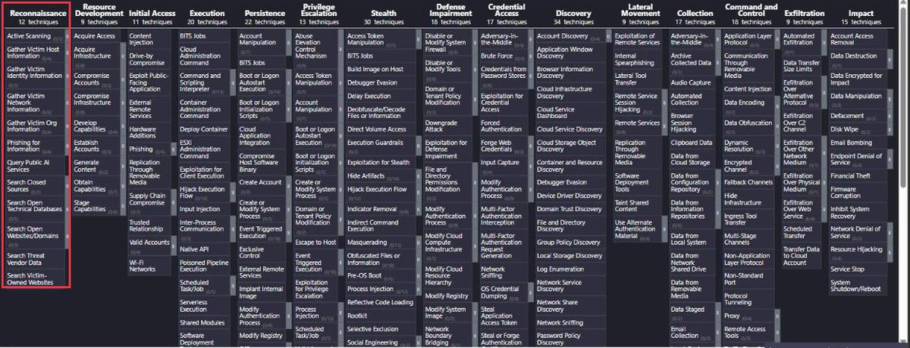
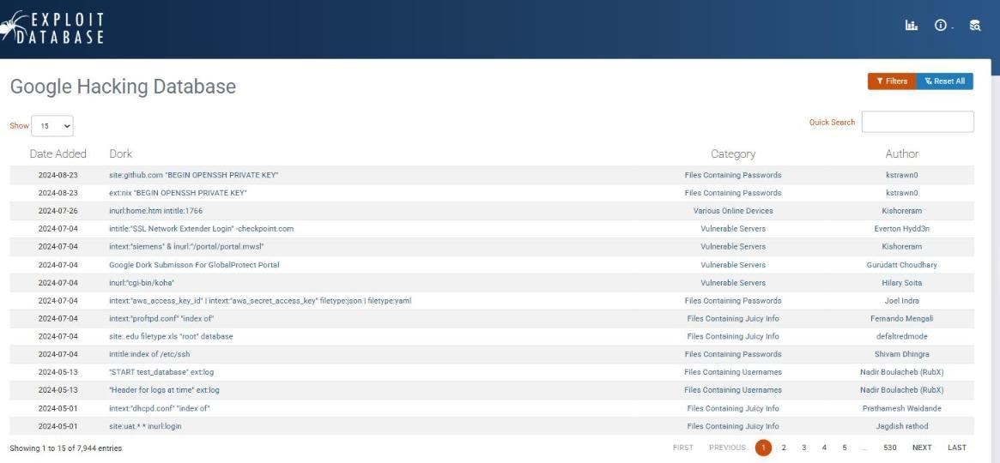
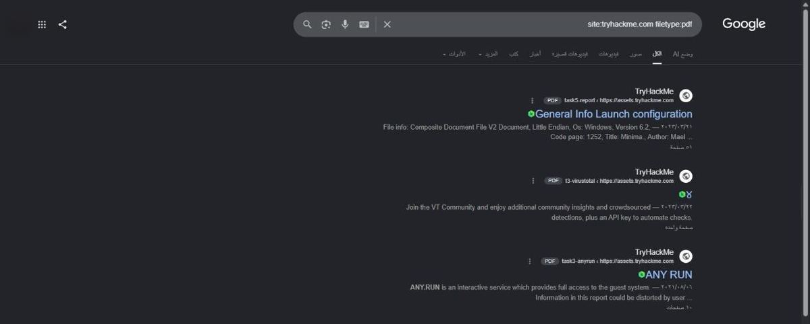
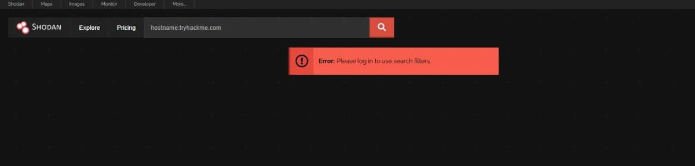
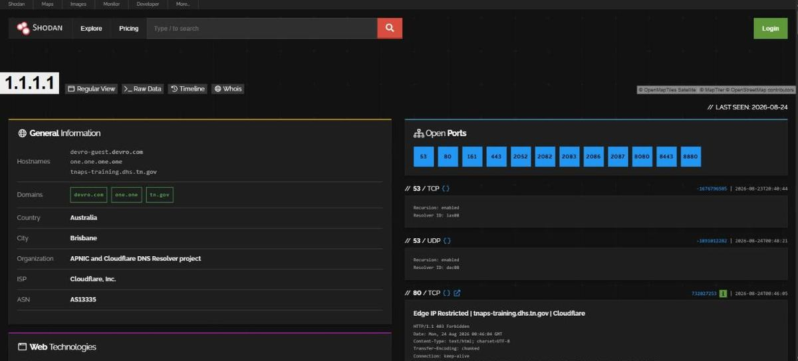
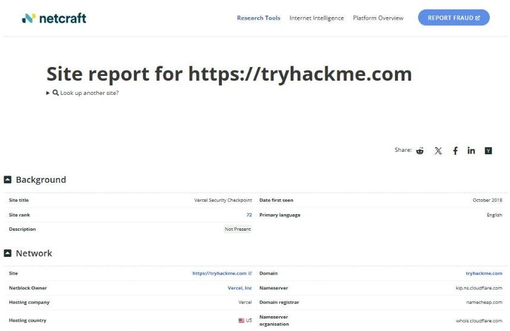

Footprinting & Reconnaissance
Half of today is on your keyboard. By the end you will hand in a recon report on a real company that never learns you were looking.
Today's agenda
| Block | What we do | Format | Min |
|---|---|---|---|
| 1 | The recon funnel, the engagement brief, and the rules for today | Theory | 15 |
| 2 | Search engines as an attack tool — dorks, GHDB, robots.txt | Theory | 7 |
| 3 | Lab 1 — dork the target | Hands-on | 14 |
| 4 | Shodan · Netcraft · certificate transparency | Theory | 14 |
| 5 | Lab 2 — the web-services sweep | Hands-on | 16 |
| 6 | WHOIS → RDAP · people and email recon | Theory | 13 |
| 7 | Lab 3 — registration data and the email pattern | Hands-on | 10 |
| — | Break | — | 10 |
| 8 | theHarvester · subdomains without touching the target · stack fingerprinting | Theory | 16 |
| 9 | Lab 4 — automate everything you just did by hand | Hands-on | 16 |
| 10 | Crossing the line · DNS recon and zone transfers | Theory | 13 |
| 11 | Lab 5 — DNS sweep and a live zone transfer | Hands-on | 16 |
| 12 | Route tracing and web crawling | Theory | 8 |
| 13 | Lab 6 — the path and the pages | Hands-on | 10 |
| 14 | Subdomain vs subdirectory brute-force | Theory | 7 |
| 15 | Lab 7 — guessing what was never published | Hands-on | 16 |
| 16 | Footprinting countermeasures — the defender's half | Defender | 7 |
| 17 | Lab 8 — assemble the recon report | Hands-on | 14 |
| 18 | Into Session 3 · knowledge check · practice plan · wrap | Wrap-up | 16 |
Session 1 was one lab at the end. Today there are eight hands-on blocks — 112 of our 240 minutes. Every tool is taught the same way: what it is, why it exists, the method behind it, the real syntax, how to read the output, what it feeds later in the course, and what a SOC analyst would see.
Passive means you never touch the target. You may read anything the world already published. The moment a tool sends a packet to the target, it needs written authorization — and every time we cross that line today, we swap to a target that has published permission. We will say so out loud each time.
You Crossed the Line. Today You Step Back Over It.
Last session ended with your source IP sitting in a target's logs. That was the loud way.
Session 1 finished with nmap -sn, nmap -sV and three netcat banners against your own Metasploitable2. You proved you can make a target talk. You also proved something less comfortable: every one of those commands announced you.
You are hired to test a company you have never seen. You have their domain name and nothing else. What is the worst possible first command?
Reveal
nmap against their public range. It is the first thing beginners type and the first thing a SIEM catches. You have burned your source IP, told them the engagement started, and learned less than a fifteen-minute browse of their certificate logs would have given you. Reconnaissance is the phase where patience is a technical skill.
| Session 1 — first contact | Session 2 — today | |
|---|---|---|
| Who you talk to | The target itself | Everyone except the target |
| What it costs you | Log entries with your IP | Nothing — you are one more anonymous reader |
| What you learn | One host, its open ports | Their whole estate, their people, their stack, their mistakes |
| ATT&CK | TA0043 · T1595 Active Scanning | TA0043 · T1589 / T1590 / T1593 / T1596 |
| Detectable? | Yes — that was the point | Mostly not. That is also the point |
Good attackers exhaust passive reconnaissance before making first contact — so that when they finally send a packet, they already know exactly where to send it. Today we do the phase you skipped.
What Footprinting Actually Produces
Not "information". A ranked list of things you are going to attack next session.
Students who learn recon as "run these twelve tools" produce twelve unrelated text files and no conclusion. Recon is a funnel: each stage takes a wide, cheap, noisy input and narrows it into something the next stage can act on. Know which stage you are in and you always know which tool to reach for.
STAGE 1Everything the world already published
Question: what exists at all? Tools: Google and its operators, the Google Hacking Database, Shodan, Netcraft. Cost: free, anonymous, unlimited. Hands to stage 2: a pile of raw hits — pages, files, IPs, banners — most of which are noise.
STAGE 2Only what mentions this organisation
Question: what belongs to them? Tools: WHOIS/RDAP, certificate transparency (crt.sh), hunter.io, LinkedIn, theHarvester. Method: pivot on things that are hard to fake — a registrant, an ASN, a certificate SAN field, an email domain. Hands to stage 3: candidate hostnames, IP ranges, employee names and an email convention.
STAGE 3Names that resolve to a real asset
Question: which of those candidates are actually alive? Tools: dig against a public resolver, DNSDumpster, subdomain aggregators. Why still passive: you are asking public resolvers, not the target's servers. Hands to stage 4: a resolved host list with IPs — the last thing you get for free.
STAGE 4Assets that answer when spoken to
Question: what is really running there? Tools: dnsrecon, zone transfer, traceroute, Photon, knockpy, gobuster. Cost: your source IP in their logs — so you only spend it on targets stages 1–3 already justified. ATT&CK: T1595 Active Scanning.
OUTPUTThe ranked target list
This is the deliverable — not a folder of tool output. Each row: hostname, IP, service, version, why it is interesting, and how confident you are. Taught in: Lab 8 today. Consumed by: Session 3 (scanning and enumeration), Session 4 (credentials), Session 8 (web).
Run the funnel against your own organisation and it becomes an attack-surface review. Every stage-1 and stage-2 hit you find is something an attacker already has, for free, before any alert you own can fire. This is the entire premise of the attack-surface-management products your SOC probably pays for.
Today's Target, and the Line You May Not Cross
One company, followed all the way down the funnel — plus three stand-ins for the things you may never do to a stranger.
Twelve tools against twelve demo targets teaches twelve disconnected commands. One target, followed through every tool, lets you watch a picture assemble — which is what recon actually feels like.
The client
A real company with a real internet footprint: certificates, subdomains, mail infrastructure, hosting, staff, a technology stack. Everything we do to it today is reading data other people published about it — registrars, certificate authorities, search engines, scan databases. Not one packet of ours reaches their servers.
It is also the target TryHackMe's own free rooms use in their examples, so tonight's homework continues the same picture rather than starting a new one.
Where we swap targets, and why
Four things on today's list are active — they send traffic to the target. Doing those to a company that has not signed anything is a criminal offence in Egypt, the UK, the US and most other jurisdictions. So each of them gets a target that has published its own permission:
| Technique | Target we use | Authorization basis |
|---|---|---|
| Zone transfer (AXFR) | zonetransfer.me | Published by Robin Wood (DigiNinja) explicitly for training: "feel free to use this domain in your training and when talking to clients." |
| Route tracing · one active probe | scanme.nmap.org | The site states: "You are authorized to scan this machine with Nmap or other port scanners… a few scans in a day is fine." |
| Subdomain enumeration & brute-force | vulnweb.com | Acunetix publishes the vulnweb family expressly for testing security tools; a light subdomain scan discovers its real subdomains (testphp, testasp, …). |
| Directory brute-force · crawling · fingerprinting | testphp.vulnweb.com | Acunetix's deliberately-vulnerable site — its home page invites you to "use it to test other tools and your manual hacking skills as well." |
Passive recon on public data is legal against anyone. Active recon is legal only against a target that has authorised you in writing. "It was only a subdomain scan" is not a defence — the wordlist you fire at a stranger's DNS server is thousands of unsolicited queries, and it is logged as an attack because that is what it is. Every time we cross the line today, the page tells you which target and why.
Where today sits in MITRE ATT&CK
Reconnaissance is tactic TA0043 — the first column of the Enterprise matrix, and the only one that happens entirely outside your network. Every technique below is on today's menu.
| ID | Technique | Today's tools |
|---|---|---|
| T1593 | Search Open Websites/Domains | Google dorks, GHDB, LinkedIn |
| T1594 | Search Victim-Owned Websites | robots.txt, sitemap, Photon |
| T1596 | Search Open Technical Databases | WHOIS/RDAP, crt.sh, Shodan, Netcraft |
| T1589 | Gather Victim Identity Information | hunter.io, theHarvester, LinkedIn |
| T1590 | Gather Victim Network Information | dig, DNS records, traceroute |
| T1592 | Gather Victim Host Information | Wappalyzer, whatweb, banners |
| T1595 | Active Scanning (.003 Wordlist Scanning) | knockpy, gobuster, dirb |

TA0043 is the tactic your SIEM almost certainly cannot see. That is not a gap you close with a rule — it is one you close with exposure management: certificate-transparency monitoring, dorking your own domain, watching your own Shodan footprint. Today teaches you the attacker's half; page 24 gives you the defender's half of every single technique.
The Search Engine Is a Vulnerability Scanner
It already crawled them. It already stored the mistake. You just have to ask the right question.
You start here because it is the only tool that has already done the work. Google has been crawling your target for years. Everything they accidentally published is sitting in an index, waiting — and reading an index is not contacting the target.
What it is
Using search-engine operators to retrieve documents and pages the target never intended to be public. The technique is called Google dorking or Google hacking.
Why it exists
Because "not linked from the homepage" is not the same as "not published". A file dropped in a web root is fetched by a crawler that followed a sitemap, a partner link, or a certificate log — and once it is indexed, it is public forever, even after the original file is deleted.
THEIR SERVER"Unlinked" is not "private"
The mistake: a file is uploaded to a web root and never linked, on the assumption nobody can find it. Why that fails: crawlers arrive from sitemaps, partner links, referrer headers, certificate logs and browser telemetry — none of which need a link on the homepage. The fix is authentication, not obscurity.
CRAWLERThe only party that actually touches the target
What it does: fetches pages, extracts keywords and links, follows every URL it finds, including outward to other domains. Why it matters to you: the crawler spent the packets so you do not have to — this is the same indirection Shodan uses on the next page.
INDEXDeleting the file does not delete the finding
Key property: the index is a copy, held by a third party, on their schedule. A file removed this morning can stay retrievable for weeks, and the Wayback Machine may keep it for years. Defender consequence: remediation is delete plus de-index — see the SOC flip below.
YOUReading an index is not contact
Your traffic goes to Google, not to the target. Zero entries in their logs, no attribution, no rate limit that matters. ATT&CK: T1593.002 Search Engines. Feeds: Section 1 of today's report, and the hostname list you merge in Lab 2.
ROBOTS.TXTA signpost that people mistake for a lock
What it really is: a voluntary request to well-behaved crawlers. Nothing enforces it. What it gives an attacker: a curated list of the paths the owner considers sensitive enough to hide — often the fastest route to an admin panel. Note the amber path: it goes straight from their server to you, skipping the index, which is why fetching it counts as active recon. We do that in Lab 6, against the authorised testphp.vulnweb.com.
The method — how experienced people actually dork
Beginners memorise operators. What matters is that you are not searching for a page, you are searching for the shape of a mistake. There are only three shapes:
| Shape of mistake | What it looks like | The dork that finds it |
|---|---|---|
| 1 · A file that should never have been in a web root | Backups, exports, spreadsheets, config, credentials | site:target.com filetype:xlsx |
| 2 · A page that names its own software | Login portals, admin panels, device UIs with the version in the title | site:target.com inurl:admin |
| 3 · A directory with listing left on | The whole folder, browsable | site:target.com intitle:"index of" |
Then comes the move that separates recon from browsing — the pivot. Run the dork with site: to inventory your target. Then remove site: and add a string unique to them — a support-ticket format, an internal project codename, a staff email domain — and you find the same organisation's data sitting on somebody else's server: a supplier, a conference site, a former employee's portfolio.
Real syntax
# everything the index holds for one domain
site:tryhackme.com
# non-www hosts only — a fast, free subdomain hint
site:tryhackme.com -site:www.tryhackme.com
# documents, which is where organisations leak
site:tryhackme.com filetype:pdf
site:tryhackme.com (filetype:xlsx OR filetype:docx OR filetype:csv)
# the shape of an exposed directory listing
site:tryhackme.com intitle:"index of"
# exact-phrase pivot — find their data on someone else's server
"tryhackme.com" -site:tryhackme.com filetype:pdf| Operator | Restricts to | Note |
|---|---|---|
| site: | One domain or host | The single most useful operator. Combine with -site: to exclude |
| filetype: / ext: | File extension | Interchangeable. ext: is shorter to type under pressure |
| inurl: / allinurl: | Text in the URL | allinurl: requires every term |
| intitle: / allintitle: | Text in the page title | Finds device and appliance UIs, which name themselves in the title |
| intext: / allintext: | Text in the page body | Good for phrases like "internal use only" |
| "…" | Exact phrase | Turns a fuzzy search into a precise one |
| -term | Excludes | Removes the noise the first query returns |
| OR / | | Alternatives | Must be capitalised: OR, not or |
cache: was retired by Google in September 2024 — the operator and its documentation are gone, and cached links were removed from results. Use the Wayback Machine (web.archive.org) instead, which is better anyway because it keeps many dated snapshots rather than one. link: was retired years earlier. If a CEH practice question offers cache:, it is testing the syllabus, not the internet.
The Google Hacking Database
The GHDB, hosted by Exploit-DB at exploit-db.com/google-hacking-database, is a curated, categorised catalogue of dorks that other people already proved work — "Files Containing Passwords", "Sensitive Directories", "Vulnerable Servers", "Network or Vulnerability Data", and more. Treat it as a library of mistake-shapes: you take the shape, and you add site:yourtarget.com so it applies only to the estate you are authorised to assess.

How to read the output
Students consistently read a result page as a list of links. Read it as four fields instead:
- The hostname — is it a subdomain you had not seen? That is a free stage-2 result.
- The path — /wp-content/ tells you the CMS. /sites/default/files/ tells you Drupal. The path is a fingerprint.
- The file extension — .aspx means Windows and IIS before you have scanned anything.
- The result count — a domain with 40 indexed pages and one with 40,000 are completely different engagements.
Dorking is free, unlimited, unattributable and legal, and it routinely beats a paid scanner because it finds things that are not vulnerabilities — an org chart, a network diagram in a PDF, a procurement document naming the firewall vendor. None of that shows up in a port scan and all of it shapes the attack.
You cannot detect the search. You can detect the consequence and remove the cause:
- Hunt the retrieval, not the query. In web access logs, a request for a document deep in the tree with Referer: google.com and no prior navigation is somebody who arrived by dork, not by browsing.
- Dork yourself, on a schedule. Run site:yourdomain filetype:xlsx and the GHDB's "Files Containing…" categories against your own estate monthly. Everything you find is something an attacker already has.
- Remove, then de-index. Deleting the file is not enough — request removal through Search Console, or the index keeps serving it.
- Never list a secret path in robots.txt. Use authentication. A Disallow line is a signpost, not a lock.
ATT&CK: T1593.002 Search Engines · T1594 Search Victim-Owned Websites.
Hostnames → the subdomain list you build in Lab 2. File paths and extensions → the technology fingerprint on page 15. Documents → names, email formats and internal jargon for pages 11 and 9 — and, in Session 9, the pretext for a phishing email.
This room builds the crawler-and-index mental model properly, which is what makes dorks obvious rather than memorised. Do it before Lab 1 if you can, tonight if you cannot.
-
Google Dorking Free
Crawlers, indexing, robots.txt keyword by keyword, sitemaps, then the operators. Do this one if the diagram above was new to you. Note it still teaches cache: — see the warning above.
Lab 1 — Dork the Target
No VM, no terminal, no packets. A browser and a notebook. This is real reconnaissance.
Build the first section of today's recon report using nothing but a search engine. You are inventorying what your client has already published to the world without meaning to.
Target: tryhackme.com. Everything in this lab happens inside the search engine. You do not open their website, you do not fetch their files, you do not click through to their server. If a result looks interesting, record the URL — do not visit it. Visiting is Lab 6's job, on a different target.
Open recon_report.md now (template in exercises/session-02/). Every step below writes into Section 1 — Search-engine footprint. If it is not written down, it did not happen.
Step 1 — measure the published surface
-
Inventory everything the index holds, then strip out the obvious.
site:tryhackme.com site:tryhackme.com -site:www.tryhackme.comThe second query is the useful one: by excluding www, whatever remains is a hostname that is not the main site. Write down every distinct hostname you see in the results — that is your first subdomain list, obtained for free.
✓ Verification
- You have written down the approximate total result count for the domain
- You have at least two distinct hostnames that are not www
- Each hostname has a one-line guess beside it: what is this host for?
Step 2 — hunt documents, because documents leak
-
Sweep the file types organisations lose control of.
site:tryhackme.com filetype:pdf site:tryhackme.com (filetype:xlsx OR filetype:docx OR filetype:csv) site:tryhackme.com ext:txtFor each hit, record three things: the URL, the file type, and why an attacker would care. "A marketing PDF" is a valid finding — if it carries author metadata, an internal file path, or a staff name, it stops being marketing.
✓ Verification
- At least one document hit recorded with a why it matters line
- If a query returns nothing, that is a finding too — write "no indexed spreadsheets: good hygiene"
Step 3 — read the paths, not the titles
-
Fingerprint the stack from URLs alone.
Go back through the results you already have and look only at the paths. Note anything that names a technology: /wp-content/, /sites/default/, .aspx, /api/v1/, /_next/.
✓ Verification
- You can name at least one technology used by the target, sourced only from a URL
- You wrote down which URL told you, so the finding is evidenced
Step 4 — borrow three mistake-shapes from the GHDB
-
Open the Google Hacking Database and mine it for patterns.
# in your browser https://www.exploit-db.com/google-hacking-databasePick one category — "Files Containing Juicy Info" or "Sensitive Directories" are the most instructive. Read three entries. For each, work out what mistake it detects, then rewrite it scoped to our target with site:tryhackme.com.
Ground ruleRun GHDB dorks only with site:tryhackme.com attached. An unscoped GHDB dork returns exposed data belonging to strangers who never authorised you, and opening those results is where a legal exercise stops being legal.
✓ Verification
- Three dork strings copied into your report
- Each has one line naming the mistake it detects — not what it types, what it finds
- Each has been rerun scoped to the target, with the result count recorded (zero is a result)
Step 5 — the pivot
-
Find your target's data on someone else's server.
"tryhackme.com" -site:tryhackme.com filetype:pdfThis is the query that impresses clients. Anything it returns is your target's information hosted outside their control — a supplier's site, a conference deck, a partner's document library. They cannot patch it, they often do not know it exists, and it is entirely public.
✓ Success criteria for Lab 1
- Section 1 of recon_report.md is filled, not blank
- ≥ 2 non-www hostnames recorded
- ≥ 1 document finding with a reason it matters
- ≥ 1 technology inferred from a URL path
- 3 GHDB dorks recorded with the mistake each detects
- Your partner has read your Section 1 and can say what the target's stack probably is

Do not delete it. An empty result for site:target filetype:xlsx is a genuine, reportable finding: this organisation is not leaking spreadsheets. Recon reports that only list hits are half a report.
Shodan — Somebody Already Scanned the Internet for You
Google indexes pages. Shodan indexes banners. That difference is the whole tool.
Dorking told you what your target published. It cannot tell you what is listening. For that you need a port scan of their whole estate — which is illegal, slow and extremely loud. So you use someone else's: Shodan has been scanning the entire IPv4 address space continuously for years, and it will hand you the results for free.
What it is
A search engine for internet-connected services. Shodan connects to ports across the whole public internet, records what each service says when spoken to — the banner — and indexes it alongside the host's IP, ASN, organisation, location and TLS certificate.
Why it exists
Because nmap against a target you do not own is a crime, and against the whole internet is impossible for one person. Shodan industrialised it. The critical consequence for you: Shodan's packets hit the target, not yours. You are reading a database.
SHODAN SCANNERSSomebody else's crime budget
What they do: connect to a wide set of ports across the entire public IPv4 space, over and over, recording whatever each service replies with. Why you care: scanning the internet is illegal for you and impossible at your scale — Shodan industrialised it and gives you the results. Detectable by the target: yes, and that is the point of the SOC flip below.
YOUR TARGETThe scan already happened, without you
What lands in their logs: connections from Shodan's scanner ranges, resolvable as census*.shodan.io. What does not land in their logs: anything of yours. Consequence: the target cannot tell that anyone is interested in them specifically — they only know the internet scanned them, which is true of every host online.
SHODAN INDEXBanners, not pages — that is the whole difference
What is stored per host: IP, ASN, organisation, geolocation, every open port with its raw banner, TLS certificate, and tags such as cdn or vuln. Pivot on: ASN and certificate CN — those are structurally tied to the organisation, unlike a name in a banner.
YOUA database query, not a scan
ATT&CK: T1596.005 Search Open Technical Databases: Scan Databases. Cost: free for basic search, no account required. Feeds: candidate IPs and version strings into Session 3 (verify with a real scan) and Session 4 (CVE lookup).
THE TRADE-OFFFree and invisible, but out of date
The failure mode: reporting a Shodan banner as a live finding. The host may have been patched, firewalled, decommissioned, or reassigned to an unrelated customer since the crawl. How professionals write it: “Shodan, last seen <date>, reports X — to be verified by authorised scanning in phase 2.” A date on a claim is what separates a report from a guess.
The method — pivot on identity, not on words
Typing a company name into Shodan is the beginner move; it matches whatever strings happen to appear in banners. Professionals pivot along things that are structurally tied to the organisation, in this order:
- Hostname → IP. Resolve the domain through a public resolver, then look the IP up.
- IP → organisation and ASN. The host page names the owning org and its autonomous system. If the ASN belongs to the target rather than a hosting provider, you have just found their whole address space.
- ASN or netblock → the estate. asn:AS12345 or net:203.0.113.0/24 returns every host Shodan has seen in that range — including the ones nobody put a DNS name on.
- Certificate → siblings. ssl.cert.subject.CN:target.com finds hosts presenting the target's certificate even on unrelated IPs. This is how you find an origin server sitting behind a CDN.
Real syntax
# in the Shodan web UI search bar
hostname:tryhackme.com
net:104.26.10.0/24
org:"Cloudflare, Inc."
ssl.cert.subject.CN:tryhackme.com
port:443 country:GB product:nginx
http.title:"Login"
# on Kali, once you have an API key (free account)
pip install shodan
shodan init <YOUR_API_KEY>
shodan host 104.26.10.229Basic web searches work with no account at all. A free registered account adds a little more, but the useful filters (org:, net:, vuln:) and result depth are restricted, free accounts get no API credits, and vuln: is limited to academic and business subscribers. Plan the lab around the web UI. Nobody needs to pay anything today.
How to read the output
| Field on the host page | What it actually tells you |
|---|---|
| Last Seen | Read this first. Everything below it was true on that date. A "vulnerable" host last seen four months ago may have been patched, decommissioned, or reassigned to someone else entirely |
| Organisation / ISP | Whether you are looking at the target or at their hosting provider. If it says Cloudflare or AWS, the interesting box is behind it |
| ASN | The pivot. A target with its own ASN has its own address space — and you now have the search term for all of it |
| Open ports + banners | Service and version. This is the same information banner-grabbing gave you in Session 1, without the log entry |
| Tags | cdn means you are not looking at the origin. vuln means a banner version matched a known CVE — a hypothesis, never a confirmation |
| TLS certificate | The SAN list often names hosts you had not found. A self-signed cert on a corporate range usually means an internal appliance somebody exposed |


The prize is not the target's web server — they know about that one. It is the forgotten host: a test box on the same netblock, an appliance management interface, a printer, a camera, an unmaintained staging server with an old TLS certificate. Nobody scans those because nobody remembers them.
- You cannot see the search — you can see the scanner. Shodan's crawlers announce themselves in reverse DNS (census*.shodan.io, *.scanners.shodan.io), and mainstream IDS rulesets ship signatures for known internet-census scanners (Shodan, Censys, BinaryEdge). Those hits in your perimeter logs are the countdown clock: whatever they saw is now searchable by everyone.
- Turn the tool around. Shodan Monitor watches your own netblocks and alerts when a new port or service appears. That alert is shadow IT or a misconfiguration, caught before an attacker searches for it.
- The metric that matters is not "are we on Shodan" — everyone is. It is "is anything on Shodan that we did not intend to publish?"
ATT&CK: T1596.005 Search Open Technical Databases: Scan Databases.
Candidate IPs and netblocks → Session 3, where you verify them with a real scan. Version strings → Session 4, where they become CVE lookups and searchsploit queries. Never report a Shodan banner as a confirmed finding — report it as a hypothesis with a date on it.
Both rooms use the same target we use in class, so they extend today's picture instead of starting a new one.
-
Shodan.io Free
Goes deeper on ASN pivoting, Shodan dorking and Monitor. Do this one if the ASN step in Lab 2 felt like magic. It flags honestly which features need a paid Shodan account, so you will not hit a wall mid-room.
-
The single best free companion to today. Covers whois → RDAP, dig, DNSDumpster, crt.sh and Shodan in one run. Do this one first tonight — it is essentially today's passive half, self-paced.
Hosting History and the Certificate Log
Two databases nobody meant to build for attackers. Both are complete, both are free, and one of them lists hosts before they go live.
Shodan told you what is listening now. Netcraft tells you what was listening before — including the IP the site used before it hid behind a CDN. Certificate transparency tells you the names, including ones that were never published anywhere else. Between them they turn one domain into an estate.
Netcraft Site Report
What it is
A free report at sitereport.netcraft.com covering a site's hosting, network, registrar, name servers, SPF and DMARC records, TLS chain, detected technologies — and, uniquely, its hosting history.
Why it exists — and the method that makes it valuable
Netcraft has polled web servers for decades for its market-share surveys. The by-product is a dated record of which IP address served a given site over time. That record is the classic route to a problem attackers otherwise struggle with: a site behind a CDN or WAF. The CDN address is all DNS will give you — but the IP the site used before the CDN was deployed is often still live, still serving the same content, and no longer protected by anything, because everyone assumes traffic arrives through the CDN.
The method, then, is not "read the report". It is: compare the current IP with the historical ones, and treat any difference as a candidate origin.

Certificate transparency — crt.sh
What it is
Certificate Transparency is a public, append-only log of essentially every TLS certificate issued by a publicly trusted CA. crt.sh is a free searchable front end to those logs.
Why it exists
It was built to catch mis-issued certificates — so that a CA could not quietly issue a certificate for your bank without the world noticing. Browsers now require logging, so participation is effectively universal. The side effect nobody designed: every certificate names the hostnames it covers in its Subject Alternative Name field, and those names are now permanently public.
STEP 1The admin is doing everything right
What happens: a new internal-facing service needs TLS, so an engineer requests a certificate — often automatically, via ACME or a cloud load balancer. Nobody made an error here. Encrypting internal services is good practice, and it is precisely the good practice that publishes the hostname.
STEP 2Logging is not optional any more
Why: after real-world mis-issuance incidents, browsers began requiring proof that a certificate was publicly logged — an unlogged certificate throws an error in Chrome and Safari. So participation is effectively universal for any certificate meant to work in a browser. The one exception: a private internal CA, whose certificates are never logged — which is also why internal-only PKI hides more than public PKI.
STEP 3Append-only means forever
Property that matters: you cannot delete a CT entry. Revoking the certificate does not remove the log record. A hostname that existed for one afternoon in 2021 is still searchable today. Attacker use: historical names point at decommissioned-but-still-resolving hosts, which is where subdomain takeover lives.
STEP 4The cheapest subdomain enumeration there is
Query: https://crt.sh/?q=%25.target.com — the % is a SQL wildcard, not a typo. Yield: routinely ten to a hundred times more names than passive DNS aggregators. ATT&CK: T1596.003 Digital Certificates. Feeds: the host table in Lab 2 and the wordlist in Lab 7.
THE TIMINGWhy this beats scanning
The window: certificates are usually issued when infrastructure is provisioned — before the application is finished, before hardening, before the default credentials are changed, and sometimes before the firewall rule is narrowed. An attacker monitoring CT logs in real time learns about your new host before your own asset inventory does. That is not theoretical: it is a standard technique, and it is why the defender fix on this page is to monitor the same feed.
Real syntax
# in the browser — the % is the wildcard
https://crt.sh/?q=%25.tryhackme.com
# machine-readable, so you can sort and dedupe
https://crt.sh/?q=%25.tryhackme.com&output=json
# from Kali, straight into a clean unique host list
curl -s 'https://crt.sh/?q=%25.tryhackme.com&output=json' \
| jq -r '.[].name_value' | tr '\n' '\n' | sed 's/^\*\.//' | sort -uIt happens — it is a free service running very large queries. Fallbacks that cover the same logs: certspotter / crtsh sources inside subfinder, or the Censys certificate search. Never let one flaky website stall a whole lab block.
How to read the output
- Dedupe first. One hostname appears once per renewal — a name with 40 certificates is one host, not forty.
- Read the naming convention. dev-, uat-, stg-, vpn-, -old. Once you know the convention you can predict hostnames that were never logged — which is exactly what Lab 7's wordlist does.
- Watch the issuance dates. A cluster of certificates on one day is a deployment. A single certificate from three years ago, never renewed, is a host somebody forgot.
- Wildcards hide things. *.target.com tells you they have subdomains but names none of them — which is precisely why brute-force still exists.

- Neither lookup is detectable. Netcraft and the CT logs are third parties; nothing reaches you. Stop looking for a rule and start monitoring the same data.
- Subscribe to your own CT logs. crt.sh offers RSS per domain, and Cert Spotter and similar services will alert on new issuance. Two alerts matter enormously: a certificate for a hostname you did not request (rogue issuance or shadow IT), and a certificate for a host that is not yet in your asset inventory.
- Hunt dangling DNS. Cross-reference CT names against your live estate. A name in CT that still has a DNS record but no live service is a subdomain takeover waiting to happen — an attacker claims the abandoned cloud resource and inherits your hostname, your cookies and your reputation.
- Netcraft's history is your history too. If your old origin IP is still reachable and still serving the app, your WAF is decoration. Firewall the origin to CDN ranges only.
ATT&CK: T1596.003 Digital Certificates · T1596.004 CDNs · T1590.005 IP Addresses.
crt.sh gives you the largest single chunk of the subdomain list you will build today, and it costs nothing. Netcraft gives you candidate origin IPs. Both go into the host table that Session 3 scans.
Lab 2 — The Web-Services Sweep
Resolve, pivot, enumerate. By the end of this block you will have a host table for a company you have never contacted.
Three databases in sequence — Shodan for services, Netcraft for hosting, crt.sh for names — merged into one deduplicated table. This is the block that turns "a domain" into "an estate".
Target: tryhackme.com. Every command below either queries a third-party database or asks a public DNS resolver. Nothing you type in this lab opens a connection to the target. If you find yourself typing nmap, curl https://tryhackme.com or a browser address bar pointed at them — stop. That is Session 3, and it is not authorised here.
Step 1 — resolve the name, without touching them
-
Ask a public resolver, not their name server.
dig +short tryhackme.com A @1.1.1.1You asked Cloudflare's resolver. Cloudflare may in turn ask the target's authoritative name server — but the query arriving there comes from Cloudflare's address, not yours. That single detail is the difference between passive and active DNS, and it is the most commonly failed exam question on this topic.
✓ Verification
- You have one or more IPv4 addresses written down
- You can state, in one sentence, why this query is passive
Step 2 — Shodan: what is listening on that address
-
Search the hostname, then the IP, then pivot.
# in the Shodan search bar at https://www.shodan.io hostname:tryhackme.com # then paste the IP from step 1 straight into the search box 104.26.10.229 # then pivot on whatever organisation the host page names org:"<organisation from the host page>"On the host page, read in this order: Last Seen, then organisation and ASN, then ports, then the certificate. Record the ports with their banner versions — a port number with no version is half a finding.
✓ Verification
- Last Seen date recorded — and you have said out loud whether you would trust it
- Organisation and ASN recorded, with a note: is this the target, or their hosting provider?
- At least two open ports with banner text copied verbatim
- Any cdn tag noted — if present, you are not looking at the origin
Step 3 — Netcraft: what was listening before
-
Pull the site report and go straight to hosting history.
# in your browser https://sitereport.netcraft.com/?url=https://tryhackme.comRecord the current netblock and hosting company, then scroll to the hosting history and compare the historical IPs against the ones you got in step 1. Any historical IP that differs from the current one is a candidate origin address — write it down as a hypothesis, not a fact. Also note the name servers, SPF and DMARC records: they tell you who runs their DNS and their mail before you have queried either.
✓ Verification
- Netblock and hosting company recorded
- At least one historical IP recorded, or an explicit note that history shows only one address
- Name servers and mail-related records noted for cross-checking in Lab 5
Step 4 — crt.sh: the names
-
Query the certificate logs and reduce them to a clean list.
# browser https://crt.sh/?q=%25.tryhackme.com # or straight to a deduplicated list on Kali curl -s 'https://crt.sh/?q=%25.tryhackme.com&output=json' \ | jq -r '.[].name_value' | sed 's/^\*\.//' | sort -u | tee crtsh_hosts.txt wc -l crtsh_hosts.txtThen do the part that is actually reconnaissance: read the list for a naming convention. Group the names — public-facing, internal-sounding, environment prefixes, regional suffixes. Write the convention down as a rule, because in Lab 7 you will turn that rule into a wordlist.
✓ Verification
- crtsh_hosts.txt exists and the line count is recorded
- The list is deduplicated — no name appears twice, no leading *.
- You have written the naming convention as a sentence, e.g. "environment prefix + hyphen + service"
- At least one name in the list looks internal or non-production — flag it
Step 5 — merge into one table
-
Build Section 2 of the report: one row per host, no duplicates.
Columns: hostname · IP (if known) · source (crt.sh / Shodan / dork) · what it appears to be · confidence. A hostname found by two independent sources is worth more than one found by four queries against the same source — say so in the confidence column.
✓ Success criteria for Lab 2
- A single merged host table, deduplicated across all three sources
- Every row cites the source it came from
- At least one row is marked low confidence with a reason — recon without uncertainty is fiction
- Zero packets sent to the target, and you can prove it by pointing at every command you ran
Do not stall. Swap the order: do crt.sh from Kali with the curl | jq line while the browser retries, and come back. The lab is scored on the merged table, not on any single service being up.
Who Owns This, and Since When
The oldest lookup in reconnaissance — and it was formally replaced in January 2025.
You now have hosts and names. What you do not have is ownership: who registered this domain, when, through whom, and who runs its DNS. That last answer decides where Lab 5 points.
What it is
A query to a registry for a domain's registration record: registrar, creation and expiry dates, name servers, status codes and contacts. A separate lookup — IP WHOIS — asks a regional internet registry (RIPE, ARIN, AFRINIC…) who owns an address block. Students constantly confuse the two: whois example.com and whois 203.0.113.5 hit completely different databases.
Why it exists
Accountability. Domains are leased, not owned, and the registry has to know who to bill and who to contact about abuse. That administrative necessity is why a public record exists at all.
On 28 January 2025 ICANN sunsetted the legacy WHOIS protocol for generic TLDs in favour of RDAP — the Registration Data Access Protocol. RDAP runs over HTTPS, returns structured JSON instead of free-text, supports internationalisation, and allows tiered access to personal data. The whois command still works today because clients fail over to older servers, but RDAP is now the authoritative source and is what modern tooling queries. Learn both: the exam will ask about WHOIS, and the job will hand you JSON.
The method — read what survives redaction
Since GDPR, registrant name, address, phone and email are almost always replaced with a privacy proxy. Beginners see "Withheld for Privacy" and close the terminal. Four fields survive, and all four are useful:
| Field | What you do with it |
|---|---|
| Creation date | Organisation age and maturity. Far more importantly: when you later find a lookalike domain registered three weeks ago, its creation date is the single strongest indicator that it is a phishing domain and not a legitimate brand asset |
| Expiry date | Renewal windows are a social-engineering pretext — "your domain expires in 14 days" emails land during exactly that window, and they work |
| Name servers | The pivot. These are the servers Lab 5 interrogates. They also tell you whether DNS is self-hosted (more attack surface, more chance of an open zone transfer) or with a managed provider |
| Status codes | clientTransferProhibited means the registrar lock is on and the domain is hard to hijack. Its absence on a valuable domain is a real finding |
And one field you can only get elsewhere: history. Services such as whoxy.com keep pre-privacy snapshots — a registrant name from 2016, a registrar migration, a name-server change. A name-server change on a date that matches an incident is a lead, not a coincidence.
Real syntax
# classic, still works via failover
whois tryhackme.com
# who owns the ADDRESS, not the name — a different registry entirely
whois 104.26.10.229
# RDAP: the authoritative modern query, structured JSON
curl -s https://rdap.verisign.com/com/v1/domain/tryhackme.com | jq .
# just the dates, if you only want the timeline
curl -s https://rdap.verisign.com/com/v1/domain/tryhackme.com \
| jq -r '.events[] | "\(.eventAction): \(.eventDate)"'Abbreviated output — the lines worth reading are marked:
Domain name: tryhackme.com
Registrar: NAMECHEAP INC <-- who to impersonate in a pretext
Creation Date: 2018-07-05T19:46:15.00Z <-- age of the organisation
Registrar Registration Expiration Date: ... <-- renewal-window pretext
Domain Status: clientTransferProhibited <-- registrar lock is ON
Registrant Name: Withheld for Privacy Purposes
Name Server: <their name servers> <-- Lab 5 points here
Registrar Abuse Contact Email: abuse@...Some TLDs have no working legacy server any more. Use lookup.icann.org (RDAP-based) or query the RDAP endpoint directly with curl. The failure is the protocol transition, not your syntax.
- Not detectable. The query goes to a registry. Nothing reaches you, ever.
- Lock what you can. Registrar lock (clientTransferProhibited), registry lock for high-value domains, privacy proxy on the registrant record, and MFA on the registrar account — which is, in practice, the most under-protected admin account most organisations own.
- Alert on your own record changing. An unexpected change to your name servers or registrar is not an administrative event, it is a domain hijack in progress. Very few SOCs monitor this. It should be a scheduled check with an owner.
- Turn creation dates into detections. Newly-registered domains resembling your brand are the raw material for phishing. Feed a typosquat watchlist — built from CT logs plus newly-registered-domain feeds — into your proxy and mail filtering. This is one of the highest value-per-hour detections a small SOC can build.
ATT&CK: T1596.002 WHOIS · T1590.001 Domain Properties.
Name servers → Lab 5, where you ask them for the whole zone. Registrar and dates → Session 9, where they become a phishing pretext. Netblock owner from IP WHOIS → the range you hand Session 3.
The Part of the Attack Surface That Has a Pulse
You are not collecting email addresses. You are deriving a rule that generates all of them.
Everything so far described machines. But the perimeter gets patched and the people do not, and every credential attack in Session 4 and every phishing scenario in Session 9 starts from a list of valid usernames. That list is built here, today, for free.
You find exactly one email address for a company: sarah.hughes@target.com. How many usable usernames do you now have?
Reveal
As many as they have employees. One address does not give you one target — it gives you the convention. Combine first.last@ with a public staff list and you have generated the entire organisation's login names without sending a single packet. That generated list is exactly what feeds password spraying in Session 4.
The method — three questions, in this order
- What is the convention? first.last, flast, f.last, firstl. One confirmed address answers it. Large organisations often run two conventions after a merger — finding the second one is a genuine finding.
- Who holds access? Not the CEO. IT administrators, helpdesk, finance (payment fraud), HR (holds everyone's data and opens attachments for a living), and new starters — who do not yet know what normal looks like and are therefore the single most reliable phishing target in any company.
- What does their hiring tell you? A job advert for a security engineer that requires "3 years Fortinet, Splunk ES, Citrix NetScaler, and Active Directory" has just published the organisation's security stack, for free, in a document they actively promote.
None of these leaks come from carelessness; they come from incentives. Recruiters are measured on candidate quality, so they specify the exact stack. Employees are measured on network and visibility, so they list their certifications and the tools they administer. Marketing is measured on reach, so they publish photos with lanyards, badges and screens in them. Every one of these people is doing their job correctly. Attack surface is what an organisation's normal, healthy incentives produce — which is why "just tell people to stop posting" has never once worked as a control.
INPUT 1You only ever need one
Where it comes from: a PDF's author metadata from Lab 1, a press contact on their website, a mailing-list archive, a code commit, or hunter.io. What it is worth on its own: almost nothing. What it is worth combined with input 2: the entire staff directory.
INPUT 2The names are already public and always will be
Where it comes from: LinkedIn People, conference speaker lists, published papers, a team page, GitHub commit authors. Why it cannot be fixed: professional visibility is the point of these platforms — asking staff to hide is not a control anyone will follow. ATT&CK: T1589.003 Employee Names.
THE RULEThis is the actual finding
Common conventions: first.last, flast, f.last, firstl, first. Report it as a rule, not as a list of addresses — addresses go stale when people leave, the rule does not. Two conventions in one organisation usually means an acquisition, and the older domain is often the weaker one.
OUTPUTGenerated, not harvested
How: apply the rule to the name list — one line of awk. Accuracy: high, because organisations enforce conventions through their identity system. Still a hypothesis: confirming an address requires contact, which is out of scope today and belongs to Session 9.
SESSION 4Where this file gets used
Password spraying takes one weak password and tries it against many accounts — which needs exactly this list and nothing else. SOC detection: many failed logons across distinct accounts from one source in a short window (Windows Security 4625, Entra sign-in logs, VPN or webmail logs). Count distinct accounts, not attempts — that is the rule that separates a spray from a lockout.
Real syntax and where to look
# hunter.io — domain search gives the convention plus a confidence score
# free plan: 50 credits per month, so spend them deliberately
https://hunter.io/search/tryhackme.com
# LinkedIn — read only. Do not connect, do not message.
# the company page gives headcount; "People" gives roles;
# "Jobs" gives the technology stack in the requirements section
# generate the list once you know the rule
awk '{print tolower($1)"."tolower($2)"@target.com"}' names.txt | sort -uReading a public profile, a public job advert or a public page is passive and legal. Sending anything — a connection request, a message, an email to a harvested address — is contact with a human being, and it needs to be inside a signed engagement scope with social engineering explicitly permitted. Today is read-only. Nobody messages anybody.
How to read the output
- hunter.io's pattern field is the finding, not the individual addresses. Record it as a rule.
- Confidence scores are guesses. A 90% address is a hypothesis. It becomes a fact only when something confirms it — and confirming it usually requires contact, which is Session 9.
- Two conventions means two eras — an acquisition, a migration, or a legacy domain still accepting mail. Legacy mail paths are frequently weaker than the current ones.
- Job adverts date-stamp the stack. An advert from last month naming a product is far stronger evidence than a conference talk from 2019.

- You will never detect the collection. Detect the use: password spraying shows up as many failed logons across distinct accounts from one source in a short window — Windows Security 4625, Azure/Entra sign-in logs, or your VPN and webmail logs. A single account with many failures is a lockout; many accounts with one failure each is a spray. Build the rule that counts distinct accounts, not attempts. You will write it in Session 4.
- MFA everywhere, legacy authentication disabled. A perfect username list is worth very little against a properly configured second factor — and a great deal against a legacy protocol that cannot enforce one.
- Reduce the source data where it costs nothing: role mailboxes instead of named addresses on public pages, and job adverts that describe the role without naming exact product versions. This is a conversation with HR, and it is a legitimate part of the job.
- Watch for the convention leaking through error messages. A login page that says "user not found" versus "wrong password" confirms valid usernames for free — username enumeration is a finding you should raise on every assessment.
ATT&CK: T1589.002 Email Addresses · T1589.003 Employee Names · T1593.001 Social Media · T1591.004 Identify Roles.
Lab 3 — Who Owns It, Who Works There
Two lookups and one rule. The rule is the valuable part.
Fill Section 3 of the report: ownership, DNS delegation, and the organisation's email convention. The name servers you record here decide where Lab 5 points, so get them right.
Registry lookups and public profiles only. Read-only on LinkedIn — no connection requests, no messages, no profile you would not open in front of the client. Nothing in this lab contacts the target's infrastructure.
Step 1 — the domain record, old protocol and new
-
Run both, and compare what you get.
whois tryhackme.com | tee whois_domain.txt curl -s https://rdap.verisign.com/com/v1/domain/tryhackme.com | jq . | tee rdap.json # the timeline on its own curl -s https://rdap.verisign.com/com/v1/domain/tryhackme.com \ | jq -r '.events[] | "\(.eventAction): \(.eventDate)"'Record: registrar, creation date, expiry date, every name server, and the status codes. Then answer the question that matters — is the registrar lock on?
✓ Verification
- Registrar, creation date and expiry recorded
- All name servers recorded exactly — you will paste these into Lab 5
- You can say whether clientTransferProhibited is present
- You can name one thing RDAP gave you that the WHOIS text did not (structure counts)
Step 2 — the address record, which is a different database
-
Look up the IP you resolved in Lab 2.
whois 104.26.10.229 | head -40This answers a completely different question: who owns the network. Record the netblock, the organisation and the regional registry that answered (RIPE, ARIN, APNIC, AFRINIC). If the owner is a hosting provider rather than your client, write that down — it constrains what you may touch in Session 3, because the range belongs to a third party.
✓ Verification
- Netblock (CIDR) and owning organisation recorded
- You have stated whether the range belongs to the client or to a provider
Step 3 — the email convention
-
Find the rule, not the addresses.
# browser — spend your free credits deliberately https://hunter.io/search/tryhackme.comRecord the pattern hunter.io reports and its confidence. Then cross-check it against any address you already found in Lab 1's documents. Two independent sources agreeing is what turns a guess into a finding.
✓ Verification
- The convention written as a rule, e.g. {first}.{last}@domain
- The source and confidence recorded beside it
- If hunter.io returns nothing usable, that is written down as "convention not established" — not left blank
Step 4 — the organisation, read-only
-
Three roles and one stack clue.
On the company's public LinkedIn page, note the approximate headcount, then identify three roles that would be attractive to an attacker and say why in one line each. Then open one current job advert and extract one technology named in the requirements.
✓ Success criteria for Lab 3
- Section 3 complete: registrar, dates, name servers, status, netblock, email convention
- Three roles with a one-line reason each — and none of them is "the CEO" unless you can justify it
- At least one technology sourced from a job advert, with the advert's date
- Zero outbound contact: no messages, no connection requests, no packets to the target
Fifty a month goes quickly with twenty students. Work in pairs for this step and share the screen — the deliverable is the rule, and one lookup produces it for both of you. theHarvester on the next page also surfaces addresses without spending hunter.io credits.
Break
Halfway. Everything so far was free, legal and invisible.
Break Time
Press start when the break begins.
You have a host table, an ownership record and an email convention for a company that has no idea you exist. Three sections of the report are done.
We automate all of it with one tool, then cross the line: DNS interrogation, a live zone transfer, route tracing, crawling, and guessing what was never published. From the second half onward, your source IP starts appearing in logs — so every target changes to one that has authorised you.
theHarvester — Every Lookup You Just Did, in One Command
You did it by hand first so that when this tool prints forty lines, you know what each one is.
Had we started here, you would have a tool that produces output you cannot interpret. You have already queried certificates, search engines and registries by hand — so theHarvester is no longer magic, it is a wrapper around things you understand.
What it is
An OSINT aggregator: it queries many public sources in parallel — certificate logs, search engines, passive-DNS databases, threat-intelligence feeds — and merges the results into one deduplicated set of emails, hostnames, IPs and ASNs. Actively maintained; version 4.11.1 was released in June 2026.
Why it exists
Because the fifteen lookups you would otherwise run by hand take forty minutes, produce fifteen inconsistent formats, and get deduplicated badly by a tired human at the end of a long day.
SOURCECertificate logs — the highest-yield free source
Contributes: hostnames, including internal-sounding and not-yet-live ones. Key needed: no. Overlap: this is the same data you queried by hand on crt.sh — if theHarvester returns fewer names than your own crt.sh query did, trust your own query and say so in the report.
SOURCESearch engines — noisy, rate-limited, still useful
Contributes: hostnames and email addresses that appear in indexed pages. Key needed: usually no, but they rate-limit aggressively and will silently return nothing. Failure mode: an empty result here means "throttled", not "nothing exists" — a distinction beginners consistently miss.
SOURCEPassive DNS — what resolved historically
Contributes: hostnames that resolved at some point, from data collected by resolvers and sensors elsewhere on the internet. Why it is gold: it includes names that no longer resolve — decommissioned hosts, old infrastructure, and the dangling records behind subdomain takeover. ATT&CK: T1596.001 DNS/Passive DNS.
SOURCEKeyed sources — plan for these to fail today
Contributes: the richest data — Shodan services, Hunter email patterns, Censys certificates. Cost: an API key, and free tiers are small. In class: assume you have none. A run with three keyless sources that you understand beats a run with fifteen sources that half-fail and print red errors you learn to ignore.
THE TOOLWhy -b all is the beginner move
What happens: every module fires, many rate-limit or error for missing keys, the terminal fills with failures, and the useful output scrolls off the top. What professionals do: name three or four sources deliberately, save to a file with -f, and read the file. Also: theHarvester does not check whether anything it found is alive — resolution is a separate step you own.
OUTPUTRead it as four sections, not one blob
Emails → confirm or correct the convention from page 11. Hosts → merge into your master list, then resolve. IPs → cross-check against the netblock from IP WHOIS; anything outside it may belong to a third party and be out of scope. ASNs → a pivot back into Shodan. Confidence rule: a host reported by two independent sources outranks one reported four times by the same source.
Real syntax
# already on Kali; if not:
sudo apt update && sudo apt install -y theharvester
# deliberate sources, saved to a file you will actually read
theHarvester -d tryhackme.com -b crtsh,duckduckgo,rapiddns,hackertarget -l 200 -f s02_harvest
# what the flags mean
# -d the target domain
# -b the sources (comma separated) — never just "all" in a lesson
# -l limit results per source
# -f write HTML + JSON reports with this basename
# see what sources this build actually supports before you guess
theHarvester -h | sed -n '/-b SOURCE/,/^$/p'Many of theHarvester's best sources need a key in ~/.theHarvester/api-keys.yaml: Shodan, Hunter, Censys, SecurityTrails, VirusTotal and others. Free tiers exist for most, but they are small and several now require a business email. Today's lab uses keyless sources only. If you see red errors about missing keys, that is expected, not broken.
- The default run is invisible to you. Every source is a third party. There is no log, no alert, no rule to write.
- The exception is worth knowing: theHarvester has optional DNS brute-force and resolution behaviour. The moment those run, queries reach real resolvers and, for authoritative lookups, your DNS servers — and a burst of NXDOMAIN responses for invented hostnames is one of the few genuinely detectable recon signals. You will build exactly that detection idea in Lab 7.
- Run it against yourself. theHarvester is the fastest attack-surface inventory a small team can produce. Everything it returns that is not in your CMDB is shadow IT, and every email it returns is a spray target you should have MFA on.
Why One Domain Is Never One Target
The main site is patched, monitored and pen-tested every year. The seventh subdomain is none of those things.
Your host list is now the longest section of the report. This page explains what it is actually worth — and why the answer is not "one more thing to scan" but "the reason attackers get in at all".
A company has one hardened, WAF-protected website and forty subdomains. How strong is their web perimeter?
Reveal
As strong as the weakest of the forty-one. An attacker does not have to beat the site you defended — they only have to find the one you forgot. And every subdomain has its own server, its own patch level, its own owner, and often its own forgotten administrator.
WWWThe host everybody tests
Why it is usually solid: it is in scope for every assessment, behind the WAF, and someone's job depends on it. What recon still gets you: the technology fingerprint and the CDN — and from Netcraft's history, possibly the origin IP that sits behind the CDN unprotected.
MAILUsually outsourced, and that is good news for them
What MX records tell you: who runs their mail. A major provider means well-patched infrastructure and probably MFA — so mail becomes a phishing path rather than an exploitation path. What to record: the MX hosts and the SPF/DMARC posture; a missing or permissive DMARC policy is a genuine finding and a Session 9 enabler.
VPNThe appliance that eats organisations
Why it matters so much: a VPN or remote-access appliance is internet-facing by design and authenticates straight into the internal network. Critical vulnerabilities in these products are exploited within days of disclosure. Recon value: the login page names the vendor and often the version — which is a Session 4 CVE lookup waiting to happen.
UAT-PAYROLLReal data, test-grade security
The pattern: a pre-production environment built quickly, populated with a copy of production data, secured to "it is only temporary" standards, and never decommissioned. How you found it: certificate transparency — its TLS certificate was issued the week it was built. Why nobody defends it: it is not in the asset inventory.
OLD-INTRANETDangling DNS and subdomain takeover
The failure: the service was decommissioned — a cloud bucket, an app-platform instance, a SaaS tenancy — but the CNAME pointing at it was never removed. The attack: claim the abandoned resource, and the organisation's own DNS now sends visitors to content you control, on their hostname, with their reputation and sometimes their cookies. Defender check: cross-reference every DNS record against live services, monthly.
Two ways to find subdomains — and only one is passive
| Passive aggregation | Brute-force | |
|---|---|---|
| How | Read what others recorded: CT logs, passive DNS, search indexes | Generate candidate names and ask DNS whether each resolves |
| Tools | crt.sh, subfinder, amass -passive, theHarvester | knockpy, amass active mode, ffuf in DNS mode |
| Finds | Anything that got a certificate or was seen resolving | Names nobody ever certified — internal-only, wildcard-hidden |
| Detectable | No | Yes — a flood of NXDOMAIN at their authoritative servers |
| Authorisation | Not required | Required. Lab 7, authorised targets only |
| ATT&CK | T1596.001 / T1596.003 | T1595.003 Wordlist Scanning |
Sublist3r is the tool every CEH course names, and it is effectively dormant: its last release was v1.1 in April 2020, from the Python 2 era, and several of its search-engine sources have changed or blocked it since. Know the name for the exam; use subfinder or amass for the job. This is a general lesson, not a Sublist3r lesson — always check when your recon tool was last released, because a tool that silently returns fewer results is worse than one that refuses to run.
# modern, maintained, keyless by default
sudo apt install -y subfinder amass
subfinder -d tryhackme.com -silent | sort -u
# passive only — will not send a packet to the target
amass enum -passive -d tryhackme.comFingerprinting the stack
Once you know which hosts exist, you want to know what they run — before Session 3 confirms it with a scan.
| Tool | What it does | Status |
|---|---|---|
| Wappalyzer | Browser extension: identifies CMS, frameworks, analytics, CDN, server software from the loaded page | The project went closed-source and paywalled its API in 2023; the extension is still installable and useful for one-off checks |
| whatweb | The command-line equivalent, ships with Kali, scriptable across a whole host list | Open source and maintained — this is the one to build habits around |
| Netcraft | Technology section of the site report | Free, and fully passive — the only one of the three that does not touch the target |
Wappalyzer loads the target's page in your browser. whatweb sends HTTP requests to the target. Both are active. They belong on the other side of the line, and in Lab 4 we point them at testphp.vulnweb.com, not at the client. Netcraft is the passive substitute — this is exactly the kind of substitution a good tester makes without being told.
- Own an asset inventory that includes DNS. Most inventories list servers. The attacker's inventory lists names. Reconcile the two — every name with no owner is a finding.
- Monitor CT logs for your domains so a new subdomain appears in your queue the day its certificate is issued, not the day it is exploited.
- Hunt dangling records monthly. For every CNAME, confirm the target still exists and still belongs to you. This is a script, not a project.
- Reduce what a banner volunteers — server tokens off, framework headers stripped. It is not a security control, but it raises the attacker's cost and removes the free version string that Session 4 turns into a CVE.
Lab 4 — Automate What You Just Did by Hand
Then do the part no tool does for you: merge, resolve, and decide what is real.
Run two aggregators, merge their output with your own crt.sh list, resolve the whole thing through a public resolver, and produce the master host table. Then fingerprint a real authorised target.
Steps 1–4 are passive against tryhackme.com: aggregators query third parties, and resolution goes to 1.1.1.1. Step 5 is active and runs only against testphp.vulnweb.com — Acunetix's authorised test site. Do not point whatweb at the client. Ever.
Step 5 (and Labs 6–7) run against the Acunetix vulnweb family (vulnweb.com, testphp.vulnweb.com) — real sites Acunetix publishes for testing tools. Nothing to build; just confirm you can reach them: curl -s http://testphp.vulnweb.com/ | head -5 should return HTML.
Step 1 — theHarvester, with sources you chose
-
Run it deliberately and save the output.
theHarvester -d tryhackme.com -b crtsh,duckduckgo,rapiddns,hackertarget -l 200 -f s02_harvestRead the terminal output in sections: emails, hosts, IPs. Then answer one question in your report: did theHarvester find any email address that changes or confirms the convention you recorded in Lab 3?
✓ Verification
- s02_harvest.json and the HTML report exist
- Host count from theHarvester recorded
- The email convention is either confirmed by a second source, or explicitly noted as unconfirmed
- Any source that errored is noted — "bing failed: rate limited" is a legitimate lab note
Step 2 — subfinder, as a second opinion
-
Run a maintained aggregator and compare counts.
subfinder -d tryhackme.com -silent | sort -u > subfinder_hosts.txt wc -l subfinder_hosts.txt crtsh_hosts.txtDifferent counts are expected and interesting. Whichever tool found fewer names, ask why — different sources, different rate limits, different freshness. A tester who reports "subfinder found 12" without noticing crt.sh found 40 has produced a misleading report.
✓ Verification
- Both line counts recorded side by side
- You can name at least one host that appears in one list but not the other
Step 3 — merge into one master list
-
Combine everything, deduplicate, count.
cat crtsh_hosts.txt subfinder_hosts.txt \ | tr 'A-Z' 'a-z' | sed 's/^\*\.//' | grep -E '^[a-z0-9.-]+$' \ | sort -u > all_hosts.txt wc -l all_hosts.txt✓ Verification
- all_hosts.txt exists, is lowercase, has no wildcards and no duplicates
- The total is larger than either input list alone — if it is not, your merge is wrong
Step 4 — resolve, still passively
-
Ask a public resolver which of those names are actually alive.
while read h; do ip=$(dig +short "$h" A @1.1.1.1 | tail -1) printf '%-45s %s\n' "$h" "${ip:-DEAD}" done < all_hosts.txt | tee resolved_hosts.txt grep -c DEAD resolved_hosts.txtThe DEAD lines are not failures — they are one of the most valuable findings of the day. A name that exists in certificate logs but no longer resolves is a decommissioned service; a name that resolves to a third-party platform you cannot identify is a subdomain-takeover candidate. Flag both.
✓ Verification
- resolved_hosts.txt exists with a live/DEAD column
- Live and dead counts recorded
- At least one host flagged with a hypothesis: forgotten, pre-production, or takeover candidate
- Every query in this step went to @1.1.1.1 — check your history and prove it
Step 5 — fingerprint the authorised target
-
Now cross the line, deliberately, on Acunetix's authorised test site.
whatweb -a 1 http://testphp.vulnweb.com/ whatweb -a 3 http://testphp.vulnweb.com/-a 1 is a passive-style single request; -a 3 is aggressive and sends many more. Run both and compare how much more you learn versus how much more noise you make — that trade is the entire discipline of active recon, and you can only feel it by doing both back to back.
✓ Success criteria for Lab 4
- Master list built, merged, deduplicated and resolved
- Live/dead split recorded with at least one flagged anomaly
- whatweb output for both aggression levels captured
- You can state in one sentence what -a 3 gave you that -a 1 did not
- Section 4 of the report written — and no active command in your history points at the client
Take the naming convention you wrote down in Lab 2 and draft the wordlist you would use in Lab 7 — twenty names your target's convention predicts. Bring it to Lab 7 and compare it against the generic wordlist. A convention-derived list beats a generic one almost every time, and proving that to yourself is worth more than another tool.
From Here On, You Leave Evidence
Same information, different price. Everything after this page has a cost.
Everything so far was free: no logs, no attribution, no authorisation needed. The remaining techniques all require you to send something to a machine you do not own — so from this page onward, every lab names its authorised target before it names a command.
PASSIVEFree, invisible, and legally unremarkable
Why there is nothing to detect: your traffic goes to Google, Shodan, a CA log and a registry. The target is never a party to the conversation. Consequence for defenders: the only counter is to change what is published, or to monitor the same public sources yourself. Consequence for you: spend as long as you like here — it is the one phase with no clock and no risk.
ACTIVEEvery technique now has a named log line
What changes: your source IP is now a field in somebody's log. What you get for it: ground truth — what actually resolves, what actually answers, what actually exists that nobody ever published. The professional discipline: do it late, do it narrowly, and only where passive recon already told you it was worth the packet. ATT&CK: T1595 Active Scanning.
Zone transfer → zonetransfer.me. Route tracing → scanme.nmap.org. Crawling, fingerprinting and brute-force → the Acunetix vulnweb targets. The client, tryhackme.com, receives nothing from us for the rest of the day.
DNS — The Database Organisations Forget Is Public
Seven record types, each one a different answer. And one legacy feature that hands you the entire list at once.
Every other tool told you about hosts. DNS tells you about services: who handles their mail, which cloud vendors they trust, whether they run their own name servers, what they were forced to prove ownership of. It is an inventory the organisation publishes and rarely reviews.
A / AAAAThe address, and a scope question
Gives you: IPv4 and IPv6 addresses. The trap: an AAAA record on a host with no IPv4 is common, and many organisations firewall IPv4 carefully and IPv6 barely at all. Scope note: if the address belongs to a cloud provider, the machine may be in scope but the network is not. Feeds: Session 3's scan list.
MXWho reads their email, and how hard they are to phish
Gives you: mail servers with priorities — lower number, higher priority. What it means: a major cloud provider implies patched infrastructure and probably MFA, so email becomes a social path rather than a technical one. Self-hosted mail is a genuine exploitation target. Feeds: Session 9 phishing.
NS / SOAWho controls the zone
Gives you: the authoritative name servers, plus the SOA record's admin contact and zone serial. Why it matters: self-hosted DNS is more attack surface and much more likely to have an open zone transfer than a managed provider. The serial number tells you how often the zone changes — a high, recently-incremented serial means an actively managed estate.
TXTThe most under-rated record in reconnaissance
Gives you: SPF, DKIM, DMARC and a pile of vendor domain-verification strings. Read SPF as a supply-chain map — every include: names a third party permitted to send mail as them: a CRM, a ticketing system, a marketing platform, a payroll provider. Read DMARC as a phishing forecast: p=none means nobody is enforcing anything. Feeds: Session 9, directly.
CNAMEWhere subdomain takeover hides
Gives you: the real target behind an alias — often a cloud platform hostname that names the vendor outright. The finding: a CNAME pointing at a platform resource that no longer exists is a takeover candidate: claim the resource on that platform and you control content served on their hostname.
SRVService discovery, published
Gives you: service, protocol, port and host — for example _sip._tcp, _ldap._tcp, _kerberos._udp. Why it is orange: Active Directory publishes its domain controllers through SRV records, so an internal-facing or leaked zone can name the DCs outright. Feeds: Session 4, where those become authentication targets.
PTRThe reverse direction, and a cheap sweep
Gives you: a hostname for an address. Why it is useful: organisations name reverse records descriptively — fw01, vpn-gw, mail-relay — so sweeping a netblock's PTR records maps infrastructure without touching a single host. Note: the reverse zone is usually controlled by the ISP, not the customer.
AXFRNot a record type — a request for the whole zone
What it is: the zone-transfer query a secondary name server uses to replicate from a primary. Why it is red: when it is not restricted, anyone on the internet can ask for it and receive every record in the zone — internal hostnames, test systems, infrastructure naming, sometimes credentials pasted into TXT records. It is also one of the few recon actions a defender can actually detect. Both halves of that are the next section.
Zone transfer — the misconfiguration that gives you everything
What it is and why it exists
A domain's zone is normally served by more than one name server for resilience. AXFR is the mechanism by which a secondary server copies the entire zone from the primary. It is a legitimate, necessary feature. The vulnerability is purely one of access control: if the primary does not restrict who may ask, it will hand the complete zone to anyone on the internet who requests it.
CORRECTThe fix is one line, and it has been known for decades
BIND: allow-transfer { 203.0.113.2; }; — or better, allow-transfer { key secondary-key; }; with TSIG, so the secondary authenticates cryptographically rather than by address. Windows DNS: zone properties → Zone Transfers → "Only to servers listed on the Name Servers tab". Managed DNS providers generally do not expose AXFR at all, which is one reason self-hosted DNS is the higher-value target.
MISCONFIGUREDWhy one reply beats a thousand guesses
What you get: every name in the zone, authoritative and complete — no wordlist, no guessing, no NXDOMAIN noise. Why the contents are worse than the list: zones accumulate TXT records added for one-off verifications and never removed, HINFO records naming operating systems, and hostnames that describe function (backup, dev, vpn-test). ATT&CK: T1590.002 Gather Victim Network Information: DNS.
Real syntax
# the record sweep — through a public resolver, so it stays passive
for t in A AAAA MX NS SOA TXT; do
echo "== $t"; dig +short "$t" tryhackme.com @1.1.1.1
done
# find the authoritative servers first — you cannot AXFR a recursive resolver
dig +short NS zonetransfer.me @1.1.1.1
# the transfer itself — ACTIVE, authorised target only
dig axfr @nsztm1.digi.ninja zonetransfer.me
# the same thing with a purpose-built tool, which also parses the result
dnsrecon -d zonetransfer.me -t axfr- You asked a recursive resolver. @1.1.1.1 or @8.8.8.8 will never serve a zone transfer. You must ask an authoritative server for that zone — get its name from the NS records first.
- The server is configured correctly. You get Transfer failed or REFUSED. That is a finding: record it as "zone transfer correctly restricted".
- TCP/53 is blocked on your side. Zone transfers use TCP, not UDP. Restrictive corporate or campus networks frequently block outbound TCP/53, so the query times out rather than being refused — try from a different network before concluding anything.
- Zone transfer is one of the few genuinely detectable recon events. It is a distinctive query type over TCP/53 from a source that is not your secondary.
- BIND: the query log records the transfer explicitly, in the shape client <src>#<port> (zone): transfer of 'zone/IN': AXFR started. Alert on any source that is not on the allow list.
- Windows DNS Server: enable Analytical logging (Microsoft-Windows-DNS-Server/Analytical) and alert on queries of type AXFR/IXFR. It is off by default, which is why most estates would never see this.
- Network: Zeek's dns.log records qtype_name=AXFR — one field, one alert. Firewall rules should permit TCP/53 inbound only from known secondaries in the first place.
- The related detection worth more: a spike of NXDOMAIN responses from one source is subdomain brute-force — the technique attackers fall back to when the zone transfer is properly refused. Baseline your normal NXDOMAIN rate and alert on the deviation.
MX and SPF → Session 9's phishing scenario. SRV and internal hostnames → Session 4's authentication targets. Everything else → the Session 3 scan list, which is now authoritative rather than guessed.
Do these in order — the first rebuilds the protocol, the second is today's whole passive half at your own pace.
-
DNS in Detail Free
Hierarchy, record types and the full resolution path, with a practical task at the end. Do this one if the record map above introduced a type you had not used.
-
Includes a TXT-record hunt against a lab domain — the exact skill from Lab 5, with a flag at the end so you know you got it right.
-
The other side of page 17: browser dev tools, ping and TTL, traceroute, telnet and netcat against a provided target. Do this one before Session 3.
Lab 5 — Interrogate DNS, Then Take a Whole Zone
The record sweep is passive. The zone transfer is not — so the target changes, and you will say why out loud.
First a full record sweep on the client through a public resolver. Then a real, successful zone transfer against a domain published for exactly this purpose — and you will read the dump properly rather than screenshotting it.
Steps 1–2: tryhackme.com, and every query goes to
@1.1.1.1. Passive.
Steps 3–5: zonetransfer.me, whose owner publishes it for
training and asks only that you use it sensibly. Active, and authorised.
You do not run dig axfr against the client. Not once, not "just to see".
Step 1 — the record sweep
-
Pull every record type that matters, in one pass.
for t in A AAAA MX NS SOA TXT; do echo "===== $t"; dig +short "$t" tryhackme.com @1.1.1.1 done | tee dns_sweep.txt✓ Verification
- dns_sweep.txt contains a section for each record type
- Name servers here match the ones WHOIS gave you in Lab 3 — if they differ, that is a finding, not a typo
- MX hosts recorded with their priority numbers
Step 2 — read TXT as a supply-chain map
-
Pull the SPF and DMARC records apart.
dig +short TXT tryhackme.com @1.1.1.1 dig +short TXT _dmarc.tryhackme.com @1.1.1.1List every include: in the SPF record — each one is a third party permitted to send email as your client. Then read the DMARC policy: p=none means nothing is enforced, p=quarantine or p=reject means spoofing their domain is much harder.
✓ Verification
- Every SPF include: listed, with a guess at what each vendor does
- DMARC policy recorded — and if there is no DMARC record at all, that is written down as the finding it is
- At least one domain-verification TXT record identified and attributed to a vendor
Step 3 — find the authoritative server, then ask it
-
Switch targets, and say the authorisation out loud before you press enter.
dig +short NS zonetransfer.me @1.1.1.1 dig axfr @nsztm1.digi.ninja zonetransfer.me | tee axfr_dump.txt wc -l axfr_dump.txtIf it times out rather than refusing, your network is blocking outbound TCP/53 — say so, and pair with someone whose network allows it.
✓ Verification
- axfr_dump.txt contains dozens of records, not an error
- You can state which name server served it and why a recursive resolver could not
Step 4 — read the dump like an attacker, not like a log
-
Extract four categories from the zone, not just a host count.
# every hostname in the zone awk '/IN\s+(A|AAAA|CNAME)/ {print $1}' axfr_dump.txt | sort -u # the records people forget are public grep -Ei 'TXT|HINFO|SRV|MX' axfr_dump.txtNow the analysis. Answer these four in your report:
- Which hostnames describe their function? Anything containing dev, test, vpn, office, internal is self-labelling.
- What is in the TXT records? Zones accumulate them. Read every one.
- Do any records point to private address space? An RFC1918 address in a public zone tells you the internal addressing scheme for free.
- What is the naming convention, stated as a rule you could extend?
✓ Verification
- A deduplicated hostname list extracted from the dump
- At least two hosts whose name alone tells you their role
- Every TXT record read, with anything unusual quoted into the report
- The naming convention written as a rule
Step 5 — the same thing with a purpose-built tool
-
Run dnsrecon and compare what it adds.
dnsrecon -d zonetransfer.me -t axfr # and, for contrast, what a correctly configured server does dig axfr @1.1.1.1 zonetransfer.meThe second command will fail — a recursive resolver never serves a zone. Read the exact error and write it down, because on a real engagement that is the response you will get 95% of the time, and you need to recognise it instantly rather than assuming you typed something wrong.
✓ Success criteria for Lab 5
- Section 5 written: record sweep, SPF/DMARC analysis, zone dump, naming convention
- The failure output from the resolver captured and understood
- You can explain to your partner why step 1 was passive and step 3 was not
- No axfr command in your shell history points at the client
Open the query you just ran, then write the detection you would deploy for it: which log source, which field, what threshold. You now have the attacker's command and the defender's rule for the same event, which is exactly the pairing a SOC interview asks you to produce.
The Path to Them, and Every Page They Published
Two active techniques with very different noise profiles — one whispers, one shouts.
Both need contact with the target, but they sit at opposite ends of the noise scale. Traceroute sends a handful of packets and maps the network around the target. A crawler sends hundreds and maps everything on it. Knowing which to reach for is the judgement this page teaches.
Route tracing
What it is and why it exists
Traceroute reveals the sequence of routers between you and a target by exploiting the IP TTL field: send a packet with TTL 1 and the first router replies "expired"; TTL 2 and the second replies; and so on, until the target itself answers. Each expired reply names one hop. It exists to diagnose routing, and it doubles as a cheap map of the target's network edge.
YOUThe trick is the TTL, not the tool
Mechanism: you send packets with a deliberately tiny time-to-live, and let each router along the way expire one and announce itself. Consequence: traceroute is only ever as good as the routers' willingness to send ICMP "time exceeded" — many now suppress it, which is why some hops show * * *.
EARLY HOPSYour side, not theirs
What they are: your own ISP and transit providers. Recon value: essentially none — these are the same for everything you traceroute. Skip past them to the tail.
MIDDLE HOPSThe internet's backbone
What they are: transit and peering between major networks. Occasionally useful: reverse-DNS names on these hops reveal the target's upstream provider and rough geography, which matters if you are mapping which of several sites you are actually reaching.
LAST HOPSWhere recon value concentrates
What they are: the target's upstream and border router. What you learn: the ASN and provider actually serving them (cross-check against IP WHOIS), and often a reverse-DNS name that identifies the border device or its vendor. Feeds: the network picture in Session 3.
THE TARGETSilence is data
Two outcomes: the target replies (you have confirmed reachability and the exact path), or the trace dies a hop or two before it (a firewall is dropping the probes). The second is a finding: the point where replies stop usually marks the perimeter, and the last responding hop is frequently the border firewall. Tip: ICMP is often filtered — try tcptraceroute to port 443, which follows the path web traffic is allowed to take.
Web crawling
What it is and why it exists
A crawler requests a page, extracts every link, and follows them — recursively — building a map of a site's structure, files, parameters and external references. Doing this by hand on a site of any size is impossible, which is why the tool exists. Photon is a fast OSINT-focused crawler that also extracts emails, social handles, keys and out-of-scope links as it goes.
A crawl is hundreds to thousands of requests to the target — the noisiest thing you do all day, and unmistakable in an access log. It only ever runs against an authorised target; in Lab 6 that is testphp.vulnweb.com. And note the tooling: Photon's last release was v1.3.0 in 2019. It still runs, but it is unmaintained — use it, and keep katana or gospider (both current) in mind as the maintained alternatives. Same standing lesson as Sublist3r: check the release date.
Real syntax
# traceroute — authorised target only (scanme.nmap.org permits a few probes/day)
traceroute scanme.nmap.org
tcptraceroute scanme.nmap.org 443 # when ICMP is filtered
mtr -rwc 10 scanme.nmap.org # continuous, with per-hop loss stats
# Photon — crawl an AUTHORISED target (testphp.vulnweb.com), not the client
pip install photon
python3 photon.py -u http://testphp.vulnweb.com -l 2 -t 10 -o photon_out
# -l crawl depth -t threads -o output directoryHow to read the output
- Traceroute: read only the last three or four hops. The provider, the border device, and the point where it goes dark.
- Photon: the value is not the page list — it is the four by-product files: urls (the site map), files (documents to examine), intel (emails and handles), and any keys it flags. Treat a flagged key as a hypothesis to verify manually, never as a confirmed credential.
- Parameters in the crawled URLs (?id=, ?file=, ?redirect=) are the raw material for Session 8's web attacks — mark them now.
- Traceroute is nearly invisible individually, but repeated traces from one source across many of your hosts show up as low-TTL ICMP or unusual TCP to closed ports. Suppressing ICMP time-exceeded at the perimeter blinds casual tracing, at the cost of your own diagnostics.
- Crawling is trivially detectable and you should treat it as an early warning. In web access logs: a single source fetching many URLs in strict sequence, an automated User-Agent (python-requests, Photon, Go-http-client), a burst of 404s, and requests for /robots.txt and /sitemap.xml right at the start. Rate-limiting and a WAF bot policy turn this from reconnaissance into a blocked-and-logged event.
- The tell most people miss: a request for robots.txt immediately followed by requests for exactly the paths it disallowed is not a search engine — it is someone reading your signpost as a menu.
ATT&CK: T1590.004 Network Topology · T1594 Search Victim-Owned Websites.
Lab 6 — The Path and the Pages
One quiet technique against an authorised internet host; one loud one against your own box.
Trace the route to a host that permits it, then crawl the authorised testphp.vulnweb.com and read its robots.txt — experiencing directly why fetching that file is active and reading it in a search index was not.
Traceroute → scanme.nmap.org, which authorises "a few scans in a day". Crawl and robots.txt → testphp.vulnweb.com (Acunetix's authorised test site). Do not crawl the client, and do not hammer scanme — one trace is enough.
Step 1 — trace the path to an authorised host
-
Run it two ways and compare.
traceroute scanme.nmap.org | tee traceroute.txt tcptraceroute scanme.nmap.org 443Read only the last few hops. Cross-check the final network against what IP WHOIS says owns that address. Note any hop that shows * * * — filtered ICMP, which is itself information about where controls begin.
✓ Verification
- traceroute.txt saved with the hop list
- The final responding network identified and matched to its owner
- You can say whether ICMP or TCP got you closer, and why that might be
Step 2 — fetch robots.txt, and feel the line you crossed
-
Request the file directly from the target.
curl -s http://testphp.vulnweb.com/robots.txt curl -s http://testphp.vulnweb.com/sitemap.xmlIn Lab 1 you read a robots.txt through Google's index and left no trace. This time you fetched it yourself — and that request is now a line in that server's access log. Same file, opposite side of the passive/active line. Record which disallowed paths the file reveals.
✓ Verification
- The disallowed paths from robots.txt recorded
- You can explain why Lab 1's read was passive and this one is active
Step 3 — crawl the target
-
Map the site and mine the by-products.
python3 photon.py -u http://testphp.vulnweb.com -l 2 -t 10 -o photon_out ls photon_out/ cat photon_out/urls.txt | wc -lOpen the output directory and read the by-product files, not the URL list. Which files did it find? Any emails or handles in intel? Any URL parameters that would interest Session 8?
✓ Success criteria for Lab 6
- Traceroute captured and its tail interpreted
- robots.txt paths recorded, and the passive-vs-active distinction stated in your own words
- Photon output directory inspected — files and any intel noted
- At least one URL parameter flagged as a Session 8 candidate
- Section 6 of the report written; no crawl in your history points at the client
It is a 2019 tool on modern Python — dependency friction is expected. Fall back to katana -u http://testphp.vulnweb.com -d 2 (ships current in Kali) and note in your report that you substituted a maintained crawler. Recognising when a tool has rotted and swapping it cleanly is the skill.
Guessing What Was Never Published
Two brute-forces that sound alike and could not be more different — different namespace, different tool, different protocol, different log.
Aggregation and certificate logs find everything that was recorded somewhere. Brute-force is what remains: names that were never certified, never linked, never leaked — you find them by generating candidates and asking whether each one exists. It is the loudest, most detectable thing you do, which is why it comes last and only against an authorised target.
SUBDOMAINYou are interrogating DNS, not the website
What happens: the tool generates name.target.com from a wordlist and asks a DNS server whether each resolves. The wordlist that wins: not a generic 10,000-word list, but the naming convention you extracted from crt.sh and the zone dump earlier today — dev-, uat-, region codes, service prefixes. A convention-derived list of 50 beats a generic list of 5,000. Detection: a flood of NXDOMAIN answers at the authoritative server. ATT&CK: T1595.003. Tools: knockpy (v8, actively maintained, async), ffuf in DNS mode, amass active.
SUBDIRECTORYYou are interrogating one web server
What happens: the tool requests target.com/word for each word and reads the HTTP status. How to read status codes: 200 exists and is readable; 301/302 redirects — follow it; 403 exists but is forbidden (often the most interesting — it is there, they just do not want you in it); 401 needs auth; 404 is nothing. Detection: a burst of 404s from one source with a tool User-Agent. Tools & their state: gobuster and ffuf are the current, fast choices; dirb is unmaintained since ~2014 but still ships in Kali and is what the exam names; DirBuster is legacy Java, effectively dead; wfuzz is, contrary to rumour, still maintained (v3.1.1, 2026).
| Tool | Job | State (2026) | Use it? |
|---|---|---|---|
| knockpy | Subdomain | v8, Oct 2025, async rewrite — healthy | Yes |
| subfinder / amass | Subdomain | Current, maintained | Yes |
| Sublist3r | Subdomain | v1.1, 2020, Py2-era — dormant | Name only |
| gobuster | Directory | Current, fast (Go) | Yes |
| ffuf | Both | Current, fastest, most flexible | Yes |
| feroxbuster | Directory | Current (Rust) — recursive by default | Yes |
| dirsearch | Directory | Current (Python) — good defaults | Yes |
| dnsenum / fierce / dnsrecon | Subdomain / DNS | Ship in Kali; dnsrecon best-maintained | Exam + use |
| dirb | Directory | Unmaintained since ~2014; ships in Kali | Exam tool |
| DirBuster | Directory | Legacy Java — effectively dead | No |
| wfuzz | Directory / fuzzing | v3.1.1, Jan 2026 — alive | Yes |
The tools — real commands & per-tool cheatsheets
- Directory / content discovery → http://testphp.vulnweb.com. Acunetix publishes this and its siblings as deliberately-vulnerable sites and says on its own home page they are "intended to help you test Acunetix… you can use it to test other tools and your manual hacking skills as well." That sentence is your written authorization.
- Subdomain enumeration → vulnweb.com. The apex has a handful of real subdomains (testphp, testasp, testaspnet, testhtml5, rest) to discover — part of the same Acunetix tool-testing estate. Passive enumeration (subfinder, crt.sh) is legal against any domain; active brute-force stays on vulnweb or a domain you own.
The one rule that never changes: passive tooling → any domain; active brute-force → an authorized target only. Brute-forcing a stranger's DNS or web server is a prosecuted attack, no matter how "passive" it feels.
More authorized practice targets — bookmark these
vulnweb is the default here, but it goes down sometimes. These are all online, deliberately vulnerable, and explicitly provided for you to test tools against — so you always have a fallback and a variety of stacks to fingerprint:
| Target | What / stack | Good for |
|---|---|---|
| testphp / testasp / testaspnet / testhtml5 / rest .vulnweb.com | Acunetix — PHP, classic ASP, ASP.NET, HTML5, REST API | Directory & content discovery, stack fingerprinting, params |
| demo.testfire.net | IBM/Watchfire "AltoroMutual" — a fake bank (JSP) | Dir discovery, login/app testing; long-standing and stable |
| ginandjuice.shop | PortSwigger's deliberately-vulnerable shop | Modern web app; content discovery, params for Session 8 |
| brokencrystals.com | Modern single-page vulnerable app (many CVE classes) | Crawling, API/endpoint discovery |
| google-gruyere.appspot.com | Google's "Gruyere" web-security codelab | Beginner web-vuln practice (Google says "feel free to hack") |
| hackthissite.org | Long-running legal hacking-practice missions | Guided challenges (account, in-browser) |
| scanme.nmap.org | Nmap's authorized scan target | Host discovery / light scanning & traceroute (a few/day) |
| zonetransfer.me | DigiNinja's zone-transfer training domain | DNS records & AXFR (Lab 5) |
For structured, fully-authorized practice (accounts, in-browser labs, no target to find): PortSwigger Web Security Academy (free), TryHackMe / Hack The Box, OWASP Juice Shop (run it yourself), Root-Me, OverTheWire, picoCTF, and VulnHub (download a VM to your own lab). See the practice-plan page for the ordered list.
Wordlists — the ammunition every tool below needs
A brute-force tool is only as good as its list. On Kali they live under /usr/share/wordlists and /usr/share/seclists (install the big collection with sudo apt install seclists). The list you pick matters more than the tool you pick.
| Wordlist | For | When |
|---|---|---|
| seclists/Discovery/DNS/subdomains-top1million-5000.txt | Subdomains | Fast first pass — the 5k most common names |
| seclists/Discovery/DNS/subdomains-top1million-110000.txt | Subdomains | Thorough pass when the 5k came up thin |
| wordlists/dirb/common.txt | Directories | ~4600 entries — the quick default |
| seclists/Discovery/Web-Content/directory-list-2.3-medium.txt | Directories | ~220k — the standard serious dir list |
| seclists/Discovery/Web-Content/raft-*-files.txt | Files | Real filenames seen in the wild, by extension |
| your own list | Subdomains | The convention you extracted from crt.sh today beats any generic list — see Lab 7 |
Part A — Subdomain enumeration (left of the dot)
subfinder — passive, fast, the modern default
sudo apt install -y subfinder # or: go install .../subfinder/v2@latest
subfinder -d tryhackme.com -all -silent -o subs.txt
# -d target domain (passive — legal on any domain)
# -all use every passive source it knows
# -silent print only results, no banner (clean for piping)
# -o FILE write results to a file| Flag | Does |
|---|---|
| -d / -dL | One domain / a file of domains |
| -all | Query every source (slower, more complete) |
| -silent | Results only — ideal for | httpx or | dnsx |
| -recursive | Re-run against found subdomains |
| -o / -oJ | Output to file / JSON |
amass — deepest coverage, passive and active
sudo apt install -y amass
amass enum -passive -d tryhackme.com -o amass_passive.txt # legal on any domain
amass enum -active -d vulnweb.com -brute # ACTIVE — vulnweb / owned only
# enum the enumeration subcommand
# -passive read third-party sources only (no packets to target)
# -active resolve + optionally brute (touches DNS — authorized targets only)
# -brute turn on the brute-force resolver| Flag | Does |
|---|---|
| -passive | OSINT sources only — the safe default |
| -active | Resolves names / cert-grabs — authorized targets only |
| -brute | Add wordlist brute-forcing |
| -w FILE | Wordlist for the brute pass |
| -df FILE | Domains-from-file |
knockpy — purpose-built subdomain brute-force (v8, async)
pip install knockpy
knockpy vulnweb.com # ACTIVE brute — vulnweb / owned only
knockpy vulnweb.com -w mylist.txt --json # your own wordlist, JSON output
# <domain> the zone to brute-force
# -w FILE wordlist of candidate names
# --json machine-readable output for your report| Flag | Does |
|---|---|
| -w FILE | Candidate-name wordlist |
| --json | JSON report (drop into your recon report) |
| -t N | Timeout per query |
| --recon | Also pull passive sources first |
ffuf (vhost / DNS mode) — the Swiss-army knife, also does subdomains
# DNS-name brute (does the name resolve at all?)
ffuf -w seclists/Discovery/DNS/subdomains-top1million-5000.txt \
-u http://vulnweb.com -H "Host: FUZZ.vulnweb.com" -mc 200,301,302,403
# FUZZ the placeholder ffuf substitutes each word into
# -H forge the Host header → find name-based virtual hosts
# -mc match these HTTP codes (filter out the noise)Why the Host-header trick: many subdomains are virtual hosts on one IP — the DNS name may not resolve, but the web server serves different content when you send its Host: header. ffuf finds those; a pure DNS tool misses them.
dnsenum · fierce · dnsrecon — the classic trio (know for the exam)
dnsenum vulnweb.com # whois + records + zone-transfer try + brute
fierce --domain vulnweb.com # focused subdomain brute + nearby-IP scan
dnsrecon -d vulnweb.com -t brt -D mylist.txt # -t brt = brute-force mode, -D = wordlist
# dnsrecon -t axfr → the zone-transfer test you used in Lab 5| Tool | Best at | State |
|---|---|---|
| dnsenum | All-in-one: records, AXFR try, brute, Google scrape | Ships in Kali; dated but works |
| fierce | Subdomain brute + scanning the neighbouring IPs it finds | Rewritten in Py3 — fine |
| dnsrecon | Scriptable: -t std/axfr/brt/srv | Maintained — your go-to CLI |
Part B — Directory & content discovery (right of the slash)
All commands below run against the authorized http://testphp.vulnweb.com. If it is down, swap in a sibling (testasp/testaspnet/testhtml5.vulnweb.com) or another authorised site from the box above.
gobuster dir — fast, simple, the reliable default
sudo apt install -y gobuster
gobuster dir -u http://testphp.vulnweb.com -w /usr/share/wordlists/dirb/common.txt \
-x php,txt,bak -t 50 -o gobuster.txt
# dir directory-mode (gobuster also has dns / vhost / fuzz modes)
# -u URL the target
# -w FILE wordlist
# -x EXT also try these file extensions on every word
# -t N threads (50 is a sane, polite-ish default)
# -o FILE save output| Flag | Does |
|---|---|
| -x php,txt,bak | Append extensions — turns admin into admin.php too |
| -s / -b | Status codes to show / to blacklist |
| -t N | Threads (speed vs noise) |
| -k | Ignore TLS cert errors |
| -r | Follow redirects |
| gobuster dns | Same tool, subdomain mode: gobuster dns -d vulnweb.com -w … |
ffuf — fastest and most flexible; the one to master
ffuf -u http://testphp.vulnweb.com/FUZZ -w /usr/share/wordlists/dirb/common.txt \
-mc 200,301,302,403 -e .php,.txt -o ffuf.json
# -u ...FUZZ FUZZ is where each word is injected (path, param, header — anywhere)
# -mc match codes; -fc filters codes; -fs filters by size
# -e extensions to append
# -o output (JSON by default with -of)| Flag | Does |
|---|---|
| -mc / -ms / -ml | Match by code / size / lines |
| -fc / -fs / -fw | Filter out by code / size / words — the key to killing false positives |
| -e .php,.bak | Extensions to append |
| -recursion | Dig into every directory it finds |
| -mc all -fc 404 | The pro idiom: show everything except 404 |
The one ffuf skill that matters: a soft-404 site returns 200 for everything. Run once, see the common response size, then -fs <that size> to filter it out. Filtering, not matching, is what makes ffuf accurate.
feroxbuster — recursive by default, brilliant for deep trees
sudo apt install -y feroxbuster
feroxbuster -u http://testphp.vulnweb.com -w /usr/share/wordlists/dirb/common.txt \
-x php -d 3 -o ferox.txt
# -u URL target
# -x php extensions
# -d N max recursion DEPTH — it auto-dives into found directories
# -o FILE output| Flag | Does |
|---|---|
| -d N | Recursion depth — its headline feature |
| -x php,html | Extensions |
| -C 404 / -s 200 | Filter / show status codes |
| --extract-links | Also parse the page for links to feed back in |
| -r | Follow redirects |
dirsearch — sensible defaults, great report output
sudo apt install -y dirsearch # or: git clone .../maurosoria/dirsearch
dirsearch -u http://testphp.vulnweb.com -e php,txt,bak -x 404,403 --format=plain -o ds.txt
# -u URL target
# -e EXT extensions (dirsearch bakes %EXT% into its default list)
# -x CODES exclude these status codes
# --format / -o report format + file| Flag | Does |
|---|---|
| -e php,asp | Extensions injected into %EXT% in its wordlist |
| -x 403,404 | Exclude noise codes |
| -r | Recursive |
| -t N | Threads |
| --format=json | Report format for your evidence |
dirb — the classic (unmaintained, but it is the exam's tool)
dirb http://testphp.vulnweb.com /usr/share/wordlists/dirb/common.txt -X .php,.bak
# URL then WORDLIST as positional args (note: opposite order to most tools)
# -X file extensions to try
# -r non-recursive -z N add a delay between requests (be polite)Why still teach it: it ships in Kali, needs zero flags to get going, and the CEH exam names it. It is slow and single-threaded — fine for a small target, painful for a big one. Know it; reach for ffuf or gobuster in real work.
wfuzz — fuzz anything, not just paths (alive: v3.1.1, 2026)
wfuzz -w /usr/share/wordlists/dirb/common.txt --hc 404 http://testphp.vulnweb.com/FUZZ
# fuzz a parameter value instead of a path:
wfuzz -w nums.txt --hc 404 "http://testphp.vulnweb.com/listproducts.php?cat=FUZZ"
# FUZZ placeholder — put it in the path, a parameter, a header, POST data…
# --hc hide these response codes --hh N hide by char count| Flag | Does |
|---|---|
| --hc / --hl / --hw / --hh | Hide by code / lines / words / chars |
| --sc / --sl … | Show-only equivalents |
| -d "a=FUZZ" | Fuzz POST data |
| -H "X: FUZZ" | Fuzz a header |
DirBuster (the old Java GUI) is effectively dead — you will see it named in courseware and older writeups, but there is no reason to launch it over ffuf/feroxbuster. Recognise the name; do not use it.
Which tool, when — the 10-second decision
| You want to… | Reach for | Because |
|---|---|---|
| Find subdomains without touching the target | subfinder | Fast, passive, legal on any domain |
| The most complete subdomain picture | amass | Deepest sources; passive + active in one tool |
| Brute-force a zone you're authorized on | knockpy | Purpose-built, async, JSON output |
| Find virtual hosts DNS won't show | ffuf -H Host: | Forges the Host header |
| A quick directory pass | gobuster dir | Fast, simple, reliable |
| Accuracy on a soft-404 / weird site | ffuf | Best filtering (-fs/-fc) |
| Deep, recursive directory trees | feroxbuster | Recurses automatically |
| Fuzz a parameter, header or POST body | wfuzz | Fuzzes anything, not just paths |
| Pass the CEH exam question | dirb / DirBuster | The tools the syllabus still names |
- Subdomain brute-force = an NXDOMAIN spike at your authoritative DNS from one source. Baseline the normal rate; alert on the deviation. This is the detection that catches the attacker who was defeated by your closed zone transfer and fell back to guessing.
- Directory brute-force = a 404 burst in web access logs, one source, automated User-Agent, requests arriving faster than a human clicks. A WAF or rate-limit converts it into a blocked-and-logged event; without one, it is a rehearsal your logs recorded and nobody read.
- The control that matters more than detection: a 403 on a directory listing is good, but the real fix is that sensitive paths require authentication, not obscurity — brute-force finds hidden things, it does not find protected ones.
Every live subdomain and every discovered directory is a Session 3 scan target and a Session 8 web target. The 403 and 401 paths are the ones you carry forward — they exist, and something is guarding them, which is exactly what makes them worth the next session's time.
Lab 7 — Guess What Was Never Published
Both brute-forces, on Acunetix's authorised vulnweb targets — and proof that a smart wordlist beats a big one.
Run subdomain brute-force against vulnweb.com and directory brute-force against testphp.vulnweb.com, then read the status codes properly. The headline experiment: your convention-derived wordlist versus a generic one.
Everything here targets the Acunetix vulnweb family (vulnweb.com / testphp.vulnweb.com), published for testing security tools. Brute-forcing any other third party's DNS or web server is thousands of unsolicited requests and is prosecuted as an attack — so outside these authorised targets, this technique only ever runs against a domain you own.
Step 1 — subdomain brute-force with knockpy
-
Point the maintained tool at the apex domain.
knockpy vulnweb.com # with your own wordlist + JSON for the report knockpy vulnweb.com -w ~/my_convention_list.txt --jsonknockpy generates candidate names and asks public DNS whether each resolves. It surfaces the real vulnweb subdomains (testphp, testasp, testaspnet, testhtml5, rest) among many misses — and a flood of NXDOMAIN is the exact signal a defender alerts on (you generate it for yourself in Step 4).
✓ Verification
- knockpy reports several real *.vulnweb.com subdomains
- You can describe the NXDOMAIN pattern the misses would create in a DNS log
Step 2 — the experiment: smart list vs big list
-
Run the convention-derived list you drafted, then a generic one.
# your list from the crt.sh / zone-transfer convention (~30 names) ffuf -u http://testphp.vulnweb.com -H "Host: FUZZ.vulnweb.com" \ -w ~/my_convention_list.txt -mc 200,301,403 # a generic 5000-word list ffuf -u http://testphp.vulnweb.com -H "Host: FUZZ.vulnweb.com" \ -w /usr/share/seclists/Discovery/DNS/subdomains-top1million-5000.txt -mc 200,301,403Compare: how many hits did each find, and how many requests did each cost to find them? The point you should be able to state afterwards: recon earlier in the day (crt.sh, the zone dump) made this step both quieter and more effective. That is the whole argument for doing passive work first.
✓ Verification
- Both runs completed with hit counts and request counts recorded
- You can state which list was more efficient (hits per request), not just which found more
Step 3 — directory brute-force, and read the codes
-
Enumerate paths on testphp.vulnweb.com with two tools.
gobuster dir -u http://testphp.vulnweb.com -w /usr/share/wordlists/dirb/common.txt dirb http://testphp.vulnweb.com # the exam's tool, for comparisonDo not just collect 200s. For every hit, record the status code and what it means: which paths are readable (200), which redirect (301/302), and — most importantly — which are 403 or 401: present, but guarded. Those are the ones worth carrying into Session 8.
✓ Verification
- A path list with a status code beside every entry
- At least one 403/401 identified and flagged as "exists but protected"
- You can explain why a 403 is often more interesting than a 200
Step 4 — watch your own noise (on a server you control)
-
You cannot read Acunetix's logs — so generate the signal against your own throwaway server.
# terminal 1 — a disposable web server on your Kali, logging to the screen mkdir -p /tmp/n && cd /tmp/n && python3 -m http.server 8000 # terminal 2 — point the same tool at it for a few seconds gobuster dir -u http://127.0.0.1:8000 -w /usr/share/wordlists/dirb/common.txtWatch the 404 burst scroll up terminal 1 in real time — one source, a tool User-Agent, requests faster than any human. That is exactly what a SOC analyst sees. Write the one-line detection rule you would deploy for it. (The DNS side is the same idea: the Step 1 misses would show as an NXDOMAIN spike.)
✓ Success criteria for Lab 7
- Both brute-forces run against the authorised vulnweb targets only
- The smart-vs-generic wordlist result recorded with numbers
- Directory results carry status codes, with guarded paths flagged
- One detection rule written from reading your own noise in the log
- Section 7 of the report complete; nothing in your history brute-forced anything outside the authorised vulnweb targets
You have now generated, deliberately, the two clearest recon signals a defender can catch — the NXDOMAIN flood and the 404 burst. Most of this course's students will spend their careers on the blue side. Producing these signals on purpose, then reading them from the log, is how you learn to recognise them at 3am when someone else generated them.
Footprinting Countermeasures — the Defender's Half
You cannot detect most of what you did today. So the entire defence is about what you publish and what you monitor.
Every other page today ended with a SOC flip. This page collects them into one defensive doctrine — because reconnaissance is the one tactic where "write a detection rule" is mostly the wrong answer. You defend against recon by managing exposure, not by watching for it.
Which of today's ten techniques could a well-run SOC actually detect?
Reveal
Roughly three of ten. Zone transfer, subdomain brute-force and directory brute-force leave signals at your own servers. Everything passive — dorking, Shodan, crt.sh, WHOIS, hunter.io, theHarvester — touches a third party and leaves you nothing to alert on. That ratio is the doctrine: assume the passive 70% already happened, and compete on the two things you control — reducing exposure, and monitoring the same public sources the attacker used.
LAYER 1 · REDUCEThe controls that remove findings before they exist
DNS: restrict zone transfers to known secondaries (TSIG-signed); do not put internal hostnames or secrets in public zones; split-horizon DNS so internal names never reach the public view. Web: keep documents out of web roots; authenticate sensitive paths instead of hiding them; strip server and framework version headers; never list a secret in robots.txt. Registration: registrar + registry lock, WHOIS privacy, MFA on the registrar account. People: role mailboxes on public pages; job adverts that name the role, not the exact product versions. Cloud: firewall origin servers to CDN ranges so Netcraft history cannot route around your WAF.
LAYER 2 · MONITORTurn the attacker's tools into your alarms
Certificate transparency: subscribe to CT logs for your domains (crt.sh RSS, Cert Spotter) — a certificate for a host you did not request is shadow IT or rogue issuance. Shodan: Shodan Monitor on your netblocks alerts on new exposed ports. Dork yourself: run the GHDB "Files Containing…" categories and site: document dorks against your own domain monthly. Newly-registered-domain feeds: a typosquat watchlist built from your brand feeds your mail and proxy filtering. Your own WHOIS record: alert on any change to your name servers or registrar — that is a hijack in progress.
LAYER 3 · DETECTThe three signals that actually reach your logs
Zone transfer: BIND query log / Windows DNS Analytical log / Zeek dns.log qtype_name=AXFR — alert on any source that is not a listed secondary. Subdomain brute-force: baseline your authoritative NXDOMAIN rate and alert on the spike. Directory brute-force: 404 burst from one source with an automated User-Agent, ideally handled by a WAF rate-limit policy. Three rules — that is the entire detectable surface of reconnaissance, and most estates have none of them.
Attack-surface management is a growing SOC function precisely because of this page. "Run recon against ourselves and fix what we find, monthly" is a job, a product category, and one of the highest-value things a small security team can do. Everything you learned to do offensively today, you can sell defensively tomorrow — and in a SOC role, you will.
You cannot stop people reading what you published — you can only publish less and watch the same sources they do. Reconnaissance is defended in the design and the monitoring, not in the alert queue.
Lab 8 — Assemble the Recon Report
Seven sections of notes become one deliverable. This artefact is the whole point of the session.
Everything so far produced a section of recon_report.md. Now you turn a pile of tool output into the thing a client — or a Session 3 scanning team — actually uses: a ranked, sourced, honest picture of the target.
Do this deliverable as an interactive checklist — tick each step, paste your findings, click example on any step to see what its output looks like and why it matters later, and export to HTML or PDF to submit. It saves in your browser as you go. Open the Team Recon Report →
Notes are what a tool printed. A report is what you concluded. The grade is on the conclusions: what is worth attacking first, how confident you are, and what you would do next. Twelve tool dumps stapled together is not a report — it is homework you did not finish.
The structure
| Section | Built in | The conclusion it must reach |
|---|---|---|
| 0 · Executive summary | now | Three sentences a non-technical client understands: how exposed are they, and what is the single worst thing you found |
| 1 · Search-engine footprint | Lab 1 | What they have published without meaning to |
| 2 · Hosts & infrastructure | Lab 2 + 4 | The deduplicated host table with sources and confidence |
| 3 · Ownership & people | Lab 3 | Who owns it, who runs DNS, the email convention |
| 4 · Automated OSINT | Lab 4 | What aggregation added, and the live/dead split |
| 5 · DNS & zone data | Lab 5 | Records, SPF/DMARC posture, anything the zone leaked |
| 6 · Path & content | Lab 6 | Network edge and site structure |
| 7 · Discovered by brute-force | Lab 7 | Names and paths nobody published |
| 8 · Ranked target list | now | The deliverable. The prioritised list Session 3 scans |
Step 1 — build the ranked target list
-
Turn every host you found into one prioritised table.
Columns: host · IP · what it appears to be · why it is interesting · confidence · source(s). Then rank it. The forgotten UAT box outranks the hardened homepage. The VPN appliance with a version in its banner outranks the marketing subdomain. Ranking is the skill — a list in discovery order is not a conclusion.
✓ Verification
- Every row cites at least one source
- Every row has a confidence level, and at least one is low
- The list is ordered by attacker interest, not by the order you found things
- The top entry has a one-line justification for being first
Step 2 — write the executive summary last
-
Three sentences, no jargon.
A client's director reads this and nothing else. What is the organisation's overall exposure, what is the single most urgent finding, and what should they do about it this week? If you cannot say it without acronyms, you do not yet understand your own report.
✓ Verification
- Three to five sentences, readable by a non-technical manager
- Names the single highest-priority finding
- No unexplained acronyms
Step 3 — the honesty pass
-
Separate fact from hypothesis, everywhere.
Go through the whole report and check every claim. A Shodan banner is "reported, last seen <date>" — not "confirmed". A generated email address is "predicted from the convention" — not "valid". An unverified subdomain-takeover candidate is "candidate" — not "vulnerable". The single fastest way to lose a client's trust is to state a guess as a fact and be wrong.
✓ Success criteria for Lab 8 — and the session
- All nine sections present and written as conclusions, not raw output
- A ranked target list that Session 3 could scan tomorrow
- An executive summary a manager could read
- Every claim marked fact or hypothesis, with a date on anything time-sensitive
- A scope statement confirming no unauthorised active recon touched the client
- Submitted as recon_report.md — this is the session deliverable
This report is Session 3's input. The ranked list becomes the scan list; the host table becomes the scope; the version strings become the vulnerability lookups. Recon that does not end in a usable report is just curiosity. Recon that does is the first deliverable of every real engagement you will ever run.
Your Report Is Session 3's Input
You did not just learn recon. You built the thing next session consumes.
Reconnaissance only has value if something acts on it. Today's ranked target list is not an exercise you file away — it is the literal starting point of Session 3, where you stop reading about targets and start scanning them.
Next session you take the ranked list you just built and make first contact at scale: host discovery, the full range of TCP and UDP scan types, service and version detection, and service-specific enumeration of SMB, SNMP, SMTP and the rest. Everything you did to one host in Session 1's "first contact" lab, done deliberately across a target list you produced yourself — and every scan we run maps to a detection you will have to recognise from the other side.
Knowledge Check
Ten questions on the methods, not the syntax. Click an answer for the reasoning.
Q1 Which action is passive reconnaissance?
- Running nmap -sV against the target's web server
- Requesting /robots.txt from the target directly
- Querying crt.sh for the target's certificates
- Sending an AXFR request to the target's name server
Q2 As of 2025, what officially replaced the WHOIS protocol for generic TLDs?
- DNSSEC
- RDAP — the Registration Data Access Protocol
- A new WHOIS v2 protocol
- Certificate Transparency logs
Q3 Why does searching crt.sh reveal subdomains a DNS lookup never would?
- crt.sh brute-forces the target's DNS server
- It reads the target's zone file directly
- Every issued TLS certificate is logged publicly, and its SAN field names the hosts it covers
- It intercepts the target's HTTPS traffic
Q4 Your dig axfr @1.1.1.1 zonetransfer.me fails. The most likely reason is:
- Zone transfers are always blocked everywhere now
- 1.1.1.1 is a recursive resolver, not authoritative for the zone
- You need to run it as root
- The domain does not exist
Q5 Reading a host on Shodan is passive because…
- Shodan encrypts your search queries
- Shodan only stores publicly-allowed data
- Shodan's scanners contacted the target; you are only querying Shodan's stored results
- Shodan anonymises the target's IP address
Q6 Why is a single confirmed email address such a valuable recon finding?
- It gives you that person's password
- It reveals the naming convention, which generates every employee's username
- It lets you read that person's email
- It confirms the mail server is vulnerable
Q7 The difference between subdomain and subdirectory brute-force is that…
- One is passive, the other is active
- One is legal, the other is not
- They use the same wordlists interchangeably
- One interrogates a DNS server, the other interrogates a web server
Q8 Which recon tool is effectively dormant and should be known for the exam but replaced in practice?
- knockpy
- theHarvester
- Sublist3r
- ffuf
Q9 During directory brute-force, why is a 403 often more interesting than a 200?
- 403 means the server has crashed
- 403 means the path exists but is deliberately protected — they are hiding something there
- 403 means the file was deleted
- 403 pages always contain credentials
Q10 What is the primary defence against reconnaissance?
- A well-tuned IDS that alerts on every recon technique
- Blocking all inbound traffic from search engines
- Reducing what you publish and monitoring the public sources attackers query — most recon is not detectable
- Rotating your public IP addresses weekly
Short answer — discuss, don't click
S1 You find an open zone transfer during an authorised test. Name the ATT&CK sub-technique, one thing the dump might contain that a subdomain scan never would, and one log source that would have caught you.
Show answer
T1590.002 (Gather Victim Network Information: DNS). The dump can contain TXT records with pasted secrets, HINFO records naming operating systems, and internal hostnames with no certificate and no web presence — none of which a certificate-log or brute-force approach would surface. Detection: BIND query log, Windows DNS Analytical log, or Zeek dns.log showing an AXFR from a source that is not a listed secondary.
S2 Explain to a client why "we deleted that sensitive PDF from our website" does not remove it as a finding.
Show answer
The search index and the Wayback Machine hold copies the moment the file is crawled. Deleting the original does not touch those copies — the file stays retrievable through the index (until de-indexed via Search Console) and often permanently through web archives. Remediation is delete plus de-index plus rotate anything sensitive the document exposed (credentials, internal paths, names), because it must be assumed already collected.
Your Practice Plan
Ordered by what to do first. Every room here was opened and its tier confirmed on 24 Aug 2026.
These are self-study, not class time. Do the free rooms in the order listed — the first two are today's whole session, self-paced, and the best single use of your week before Session 3.
Every platform below hands you a target and written permission to attack it. That permission does not extend one inch beyond their lab. The instant you point these techniques at a domain nobody authorised, you are committing an offence — no matter how "passive" it felt in class.
Do these in order
| # | Room | Platform | Tier | Why this, now |
|---|---|---|---|---|
| 1 | Passive Reconnaissance | TryHackMe | Free | Today's passive half, self-paced: whois→RDAP, dig, DNSDumpster, crt.sh, Shodan. Start here. |
| 2 | Active Reconnaissance | TryHackMe | Free | The active half: browser dev tools, ping/TTL, traceroute, telnet, netcat. Do before Session 3. |
| 3 | DNS in Detail | TryHackMe | Free | Cements the record map from page 18 if any type was new. |
| 4 | Google Dorking | TryHackMe | Free | The crawler/index/robots model behind Lab 1. (Still teaches cache: — now retired.) |
| 5 | Shodan.io | TryHackMe | Free | Deeper ASN pivoting and Shodan dorking. Honest about which features need payment. |
| 6 | OhSINT | TryHackMe | Free | Pure OSINT challenge — how much one image leaks. Fun, and harder than it looks. |
| 7 | Sakura Room | TryHackMe | Free | The best free OSINT investigation on the platform. Do it when you have a clear evening. |
| 8 | Searchlight — IMINT | TryHackMe | Free | Image-intelligence OSINT — a different muscle from the rest. |
| — | Red Team Recon | TryHackMe | Premium | Recon-ng + Maltego. Excellent, but needs a subscription — optional. |
| — | Content Discovery · Subdomain Enumeration | TryHackMe | Premium | Directory and subdomain brute-force, subscriber-only. Lab 7 covers the same ground free. |
Shodan free ≈ 50 queries/month with limited filters and no API credits. hunter.io free = 50 credits/month. DNSDumpster free = 50 requests/day. Plan around the web UIs, share lookups in pairs, and never let a paywall you hit mid-lab convince you the technique does not work — it does, you have just spent your free allowance.
Takeaways & Homework
Ten tools, one target, one report — and a clear line you learned to feel, not just recite.
- Recon is a funnel, not a toolbox. Everything public → what mentions them → what resolves → what answers. Every tool lives at exactly one stage.
- Passive means zero packets to the target. You read what third parties published; the target cannot detect it and cannot log it. Spend as long here as you can.
- The order is the skill. Exhaust passive recon before first contact, so that when you finally send a packet you already know where to send it.
- Certificate transparency is a security control that leaks. crt.sh alone often gives the biggest chunk of the subdomain list — for free, before hosts are even live.
- WHOIS became RDAP on 28 January 2025. Learn both; the exam asks WHOIS, the job hands you JSON.
- One email reveals the convention, and the convention generates everyone. The most dangerous artefact today is a username list a defender cannot know you built.
- One domain is never one target. Real exposure is the weakest of forty-one hosts, not the strongest one.
- Left of the dot is DNS; right of the slash is a web server. Different namespace, tool, protocol and log.
- Check when your tool was last released. Sublist3r and Photon have rotted; knockpy, ffuf, subfinder and wfuzz are current. A tool that silently returns less is worse than one that refuses to run.
- You cannot detect most recon — so defend by publishing less and monitoring the same sources. Only ~3 of today's 10 techniques leave a signal you can alert on.
Homework — due before Session 3
| # | Task | What you submit |
|---|---|---|
| 1 | Finish and polish recon_report.md on tryhackme.com — all nine sections, ranked target list, executive summary, fact/hypothesis marked throughout | The completed report |
| 2 | Complete Passive Reconnaissance and Active Reconnaissance on TryHackMe (both free) | Room completion + one paragraph on what each added beyond class |
| 3 | Run the recon funnel against your own name or a domain you own — dork yourself, check crt.sh, look yourself up on Shodan/Netcraft | Half a page: what you found about yourself, and how it felt |
| 4 | Pick any three of today's ten techniques and write the exact detection rule you would deploy — log source, field, threshold | Three detection rules, SOC-ready |
Pass / needs-review. Conclusions over dumps; sources cited; confidence stated; facts and hypotheses separated; and a scope statement proving no unauthorised active recon touched the client. A pile of tool output is a needs-review. A ranked, honest, sourced picture is a pass.
Bring your ranked target list. Next session you scan it for real — host discovery, every TCP and UDP scan type, version detection, and service enumeration of SMB, SNMP, SMTP, LDAP and more. The picture you assembled today is about to become a set of confirmed, open, enumerated services — and every packet we send, you will also learn to catch.
Navigate with ← → arrow keys · Home / End to jump